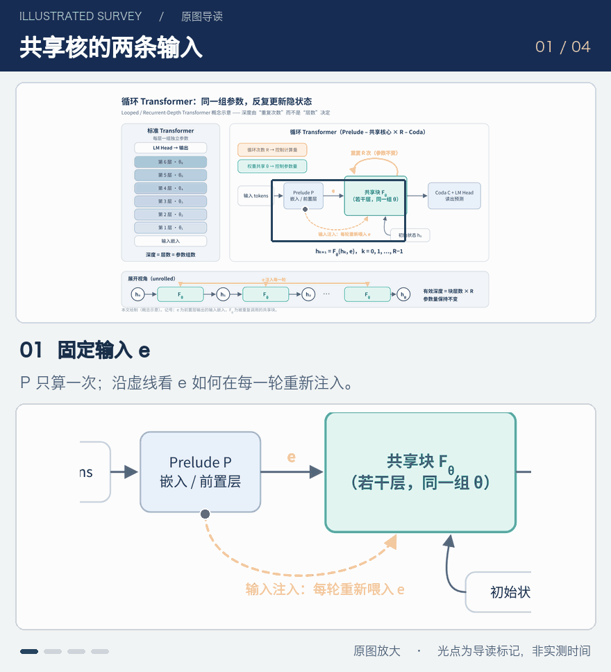
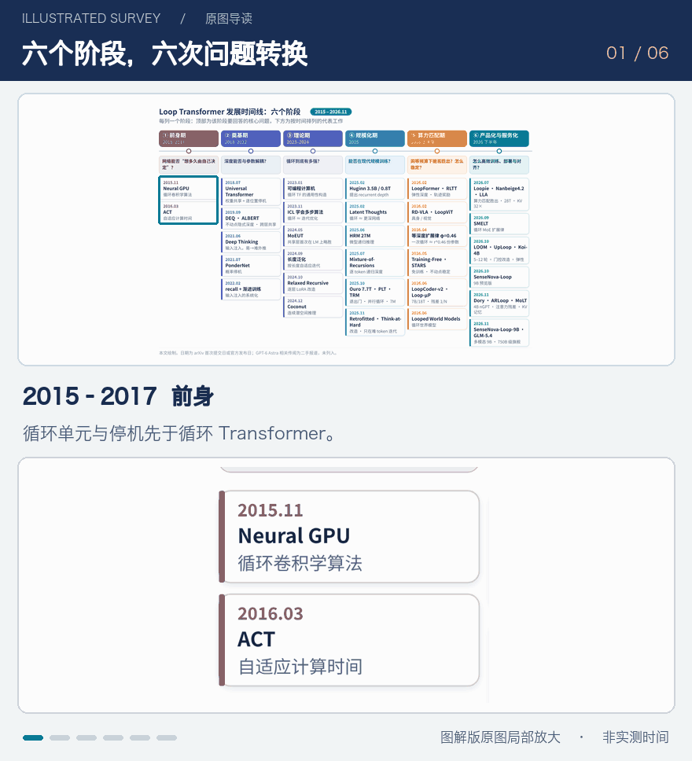
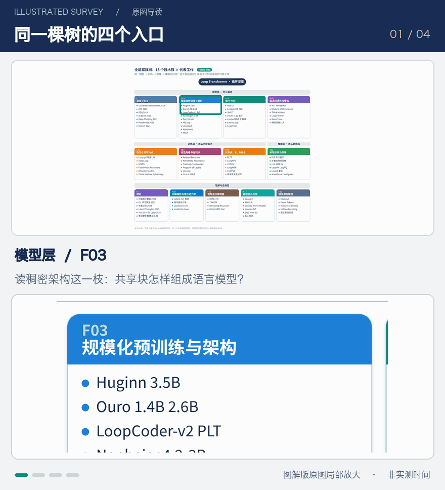
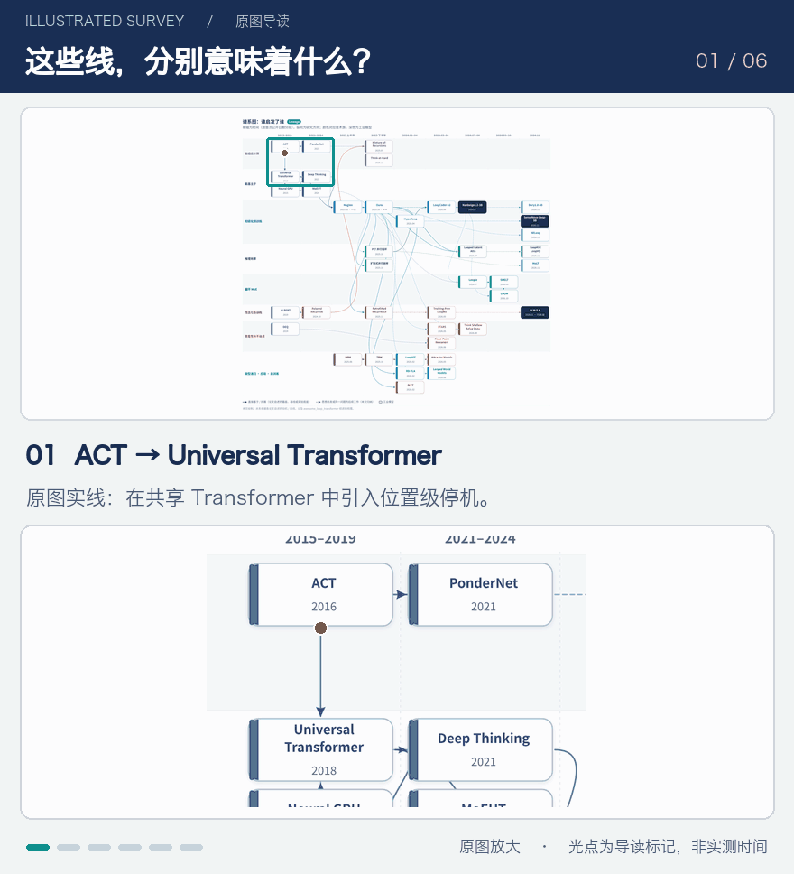
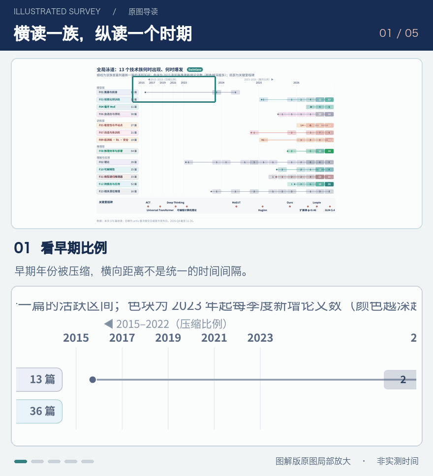

研究手记 / ILLUSTRATED SURVEY № 01Loop Transformer 技术全景（图解版）：发展史 · 家族树 · 分类 · 代表作 · 核心思想（2016 – 2026.11）
Looped / Recurrent-Depth / Weight-Tied Transformer Survey（中文讲解，保留英文术语）· 图解版 检索与整理日期：2026-11-26（北京时间）｜ 覆盖论文 376 篇（awesome_loop_transformer 清单 333 篇 + 清单快照 2026-11-06 之后 arXiv 新增 43 篇）｜ 开源模型与工业实践 17 项 ｜ 技术博客/报道 7 篇 配套表格：
Loop_Transformer_Landscape.xlsx（全量论文、开源模型、分族标签页、链接遍历记录）
本期据 2026-11-26 图解版编排。收录数与模型判断均为该版快照，而非实时排名。封面与结构图：原始图解综述 · 配套工作簿
START HERE / 选择阅读路线阅读指南
| 你的时间 | 建议阅读 | 收获 |
|---|---|---|
| ROUTE 01 · 你的时间 5 分钟 | 建议阅读 §0 一页结论 → §3 全局家族树 → §8 趋势 | 收获 知道这个方向在 2026 年底处在什么位置 |
| ROUTE 02 · 你的时间 30 分钟 | 建议阅读 §1 概念 → §2 发展史 → §4 泳道图 → §5 分类总表 → §7 开源模型 | 收获 能把任何一篇新论文放进正确的“格子” |
| ROUTE 03 · 你的时间 2 小时 | 建议阅读 全文，尤其 §6 各族 Deep Dive 与机制图解 + Excel 全量表 | 收获 每个关键数字可回溯到论文/仓库 |
关于本图解版：正文与 Mermaid 版（
Loop_Transformer_Survey_zh.md）一致，区别在于全部家族树、谱系、泳道、时间线、分类与机制流程图都重新绘制为高清 PNG（同目录images/illustrated/另附可编辑 SVG），任何 Markdown 阅读器都能直接显示。论文 / 博客原图保存在images/external/，本文重绘的概念示意图在images/redrawn/，图注均给出 Reference。阅读时请保持 Markdown 文件与images/文件夹在同一目录。
CONTENTS / 全文导航目录
- 0. 一页结论（TL;DR）
- 1. 什么是 Loop Transformer：概念、公式与设计空间
- 2. 技术发展史：六个阶段
- 3. 全局家族树与谱系图
- 4. 泳道图与时间轨迹
- 5. 分类体系总表（13 个技术族）
- 6. 各技术族 Deep Dive（含机制图解）
- 7. 开源模型与工业实践
- 8. 十大趋势判断（含 2026-11 最新变化）
- 9. 开放问题与研究机会
- 10. 工程选型：决策流程与实践清单
- 11. 资料来源、图片引用与遍历说明
- 附录 A：中英术语表
图解导航 全局视角：图 2-1 时间线 · 图 3-1 家族树 · 图 3-2 谱系 · 图 4-1 / 4-2 泳道 · 图 4-3 跨泳道影响 · 图 5-1 分类体系 ｜ 分族深挖：图 6.1 – 6.13（每族一张机制图解，部分附概念示意或原图） ｜ 落地与选型：图 7-1 – 7-7 工业路线与官方架构图 · 图 8-1 定性定位 · 图 10-1 决策流程
CHAPTER 00 / THE TAKEAWAYS0. 一页结论（TL;DR）
- 要点 01 / 08核心思想一句话：Loop Transformer 让同一组 Transformer 参数沿深度方向被重复执行 R 次，把“有效深度”与“参数量”解耦——用计算换参数，在潜空间（latent space）里“多想几步”，而不是靠生成更多 token（显式 CoT）。
- 要点 02 / 08八年三级跳：2018 年 Universal Transformer 提出机制 → 2025 年 Huginn（3.5B/0.8T）与 Ouro（2.6B/7.7T）证明可在现代规模预训练 → 2026 年 Loopie / SMELT 首次在严格算力匹配下胜过 vanilla MoE，循环从“参数效率技巧”升级为“计算效率手段”。
- 要点 03 / 082026 下半年进入产品化：Nanbeige4.2-3B（28T tokens）、Dory1.0-4B、SenseNova-Loop-9B（多模态、512K）、GLM-5.4（750B 级旗舰，2026-11-23）相继发布；Ouro/循环模型已能在 vLLM / SGLang 中服务。
- 要点 04 / 08“循环几次”分两种体制：固定预训练预算下最优多为 2 次（Loopie、LoopCoder-v2、SMELT、Nanbeige、GLM-5.4、SenseNova 默认）；可变推理算力下则是自适应、可深（Huginn 32–64、Ouro 4、LOOM 5–12、Dory 弹性）。“三次就退化”是 PLT 并行设计的位置代价，不是普遍规律。
- 要点 05 / 08结构共识：循环中段（首尾层负责编码/读出，保持独立）；MoE 骨干上用层级循环（layer-loop）避免路由抖动；需要输入注入 + 门控/阻尼更新 + 残差 1/N 缩放保证稳定。
- 要点 06 / 08最大瓶颈在推理侧：串行延迟、每轮一份 KV、量化脆弱——已有并行循环（PLT、扩散式采样 5×）、KV 共享/压缩（LLA 32×、末轮 KV 缓存、LoopVQ/LoopKV）、自投机解码（WaveFront、Floodgates 最高 7.5×）等成套解法。训练算力匹配 ≠ 推理成本匹配。
- 要点 07 / 08能力画像：循环“操纵知识而不存储知识”——擅长多步推理、长链依赖、Agent/工具调用；记忆型任务需要搭配 MoE 专家、检索或显式记忆通道。循环与显式 CoT 互补（可超加性），但标准 GRPO 对循环模型错配，需要按潜在轨迹分配奖励。
- 要点 08 / 08新风险维度：循环深度会改变安全行为（半深度时有害协助率上升 5.3×），后训练必须覆盖模型可能运行的每一个深度；潜在推理的可监督性仍是开放问题。
编者注｜怎样读「匹配」： Loopie 对照实测训练单步耗时；SMELT 对照训练 FLOPs。两者都不能直接推出线上每个 token 的延迟或 KV 成本相同。
CHAPTER 01 / THE SHARED BLOCK1. 什么是 Loop Transformer：概念、公式与设计空间
1.1 定义与公式
标准 Transformer 中每层参数只用一次：深度 = 层数。循环 Transformer（Looped Transformer，又称 Recurrent-Depth / Weight-Tied / Universal Transformer）把一段共享参数 Fθ 反复作用于隐状态：
hk+1 = Fθ(hk, e), k = 0, 1, …, R − 1
其中 e 是输入注入（input injection，每轮重新喂入输入嵌入，防止迭代漂移），R 为循环次数。一个 4 层的块循环 32 次，有效深度即 128 层，而参数量不变。典型的三段式（Prelude–Core–Coda）写作：
e = P(x), s0 ∼ 𝒩(0, σ2 I), si = R(e, si−1), p = C(sR)
图 1-1：共享块反复更新隐状态——标准 Transformer vs Prelude–共享核心×R–Coda，及展开视角（公式据 Huginn, arXiv 2502.05171）
图解版原作者绘制；保留原图尺寸与配色。 图源

MOTION STUDY / 原图放大导读
共享核的两条输入

01 固定输入 e → 02 回到同一块 → 03 尾段读出 → 04 展开检查
导读依据：arXiv 2502.05171v2
1.2 四种循环粒度（Loop Granularity）
| 粒度 | 定义 | 代表 |
|---|---|---|
| Model-loop（整模型循环） | 整个层栈的输出回送为输入 | Universal Transformer、Ouro、Metis-1.6 |
| Block-loop（段循环） | 只循环中间连续一段，首尾层不循环 | Huginn（Prelude–Core–Coda）、Training-Free、SMELT、SenseNova-Loop、GLM-5.4、Dory |
| Layer-loop（层循环） | 每一层先重复 K 次再进入下一层 | Loopie、UpLoop(Gated)、Training-Free 的 layer 模式 |
| Latent conditioning（潜在条件） | 把上一轮/上一 token 的隐状态作为条件注入 | Coconut、PLT 的 CLP、Latent Recurrent Transformer |
图 1-2：循环粒度地图——上排为参数共享范围（整模型 / 段 / 层 / 潜在条件），下排为执行调度（串行 / 跨循环并行 / 自适应停机）（PLT 调度据 arXiv 2510.24824）
图解版原作者绘制；保留原图尺寸与配色。 图源

图 1-3：五种循环结构——同色块 = 同一组参数，从下往上为一次前向的实际执行顺序（本文绘制）
图解版原作者绘制；保留原图尺寸与配色。 图源

1.3 三条正交设计轴
- 循环次数：固定 vs 自适应——固定（Loopie、LoopCoder-v2）；训练随机、推理自由（Huginn）；逐 token 自适应停机（UT 的 ACT、MoR、Think-at-Hard、RecurTrace）；单 checkpoint 弹性深度（Dory、ELR、LoopFormer）。
- 从头训练 vs 改造 vs 免训练——从头预训练（Huginn、Ouro、Loopie、Nanbeige、Dory）；改造已有模型并继续训练（Relaxed Recursive、Retrofitted Recurrence、UpLoop、GLM-5.4）；推理时零训练包装（Training-Free Looped、Program-of-Layers）。
- 目标函数把循环看作什么——截断展开的普通语言建模（Huginn）；不动点/均衡（DEQ、Attractor、Fixed-Point Reasoners、STARS）；ODE 积分细化（Training-Free）；带中间监督的潜在 CoT（LOTUS、LoopMTP）；对循环步给奖励的 RL（RLTT、LoopRPT）。
1.4 为什么有效：三种解释
- 表达力：k 层循环 L 次在许多推理问题上≈kL 层，且能模拟 T 步 CoT（Saunshi et al., ICLR'25）；循环擅长确定性并行计算（DAG 求值），CoT 擅长自归约问题（Xu & Sato 2025）。
- 扩展律：一次循环约等于 r0.46 份独立参数（φ=0.46，Schwethelm et al. 2026）——用循环替代参数在 FLOPs 匹配下会吃亏；真正的收益来自“把省下的激活内存/参数转成宽度或专家”（Loopie、SMELT、2611.34276）。
- 能力画像：Ouro 的受控实验把优势归因于知识操纵而非容量；循环模型闭卷弱、开卷强——它是“推理引擎”而不是“知识库”。
CHAPTER 02 / SIX ERAS2. 技术发展史：六个阶段
图 2-1：发展时间线——六个阶段，每个阶段顶部是它要回答的核心问题，下方是按时间排列的代表工作（本文绘制；GPT-6 Astra 相关内容仅为二手报道，未列入）
图解版原作者绘制；保留原图尺寸与配色。 图源

MOTION STUDY / 原图放大导读
六个阶段，六次问题转换

2015–2017 前身 → 2018–2022 奠基 → 2023–2024 理论 → 2025 规模化 → 2026 上半年 对照 → 2026 下半年 落地
导读依据：原图解／数据 · arXiv 1807.03819 · arXiv 2502.05171v2
2.1 各阶段要点
| 阶段 | 时间 | 核心问题 | 关键突破 | 代表作 |
|---|---|---|---|---|
| № 01 · 阶段 ① 前身期 | 时间 2015–2017 | 核心问题 网络能否“想多久由自己决定”？ | 关键突破 循环单元学算法；可微停机 | 代表作 Neural GPU、ACT |
| № 02 · 阶段 ② 奠基期 | 时间 2018–2022 | 核心问题 深度能否与参数解耦？ | 关键突破 UT 把循环引入 Transformer；DEQ 的不动点视角；输入注入让循环网络易→难外推 | 代表作 UT、DEQ、ALBERT、Deep Thinking、PonderNet |
| № 03 · 阶段 ③ 理论期 | 时间 2023–2024 | 核心问题 循环到底多强？ | 关键突破 可编程计算机构造；ICL/长度泛化；MoEUT 首次在 LM 上略胜 | 代表作 Giannou'23、Yang'24、MoEUT、Relaxed Recursive |
| № 04 · 阶段 ④ 规模化期 | 时间 2025 | 核心问题 能否在现代规模训练？ | 关键突破 Huginn/Ouro 十亿参数×万亿 token；MoR 逐 token 递归；HRM/TRM 微型递归推理 | 代表作 Huginn、Ouro、MoR、PLT、HRM、TRM |
| № 05 · 阶段 ⑤ 算力匹配期 | 时间 2026 H1 | 核心问题 同等预算下能否胜出？怎么稳定？ | 关键突破 扩展律 φ=0.46；免训练循环；Loop-μP/DeepLoop/STARS 稳定性理论；PLT 代码模型 | 代表作 Training-Free、LoopCoder-v2、STARS、Loop-μP |
| № 06 · 阶段 ⑥ 产品化与服务化 | 时间 2026 H2 | 核心问题 怎么高效训练、部署与对齐？ | 关键突破 Loopie/SMELT 算力匹配胜出；循环 MoE 扩展律；KV/量化/投机解码；安全跨深度对齐；多家发布循环模型 | 代表作 Loopie、SMELT、LOOM、Dory、SenseNova-Loop、GLM-5.4、MoLT |
2.2 研究热度：按季度的论文数量
图 2-2：季度论文数量（数据：本文 376 篇收录，按 arXiv 首次提交日期统计；2026-Q4 截至 11-26）。2026 年一年贡献了 325 篇，占全部的 86%。
图解版原作者绘制；保留原图尺寸与配色。 图源

CHAPTER 03 / TWO KINDS OF MAP3. 全局家族树与谱系图
3.1 全局家族树（按技术族）
图 3-1：全局家族树——按“模型 → 训练 → 推理 → 理解与应用”四层组织的 13 个技术族及代表工作（本文绘制；完整归属见 Excel 各族标签页）
图解版原作者绘制；保留原图尺寸与配色。 图源

MOTION STUDY / 原图放大导读
同一棵树的四个入口

模型层 / F03 → 训练层 / F05 → 推理层 / F08 → 理解与应用层 / F11
3.2 谱系图（谁启发了谁）
下图按时间从左到右展示主要工作之间的继承/对话关系：实线为直接继承（结构或方法沿用），虚线为问题驱动（针对前作的缺陷提出改进或反证）。
图 3-2：谱系图——横轴为时间、纵向为研究方向；实线 = 直接基于或扩展（论文自述的基座 / 基线 / 实验底座），虚线 = 思想启发或同一问题的后续工作（本文归纳）
图解版原作者绘制；保留原图尺寸与配色。 图源

MOTION STUDY / 原图放大导读
这些线，分别意味着什么？

01 ACT → Universal Transformer → 02 Huginn ⇢ Ouro → 03 PLT → LoopCoder-v2 → 04 Loopie ⇢ SMELT → 05 HRM → TRM → 06 读回图例
导读依据：原图解／数据 · arXiv 1807.03819 · arXiv 2606.18023v1 · arXiv 2607.16051v3 · arXiv 2609.01343v3
CHAPTER 04 / FOLLOW A LANE4. 泳道图与时间轨迹
4.1 全局泳道图（2015 – 2026.11，按技术族分泳道）
图 4-1：全局泳道——细线为各技术族的活跃区间（首篇 → 最新一篇），色块为 2023 年起每季度新增论文数，底部为关键里程碑（本文绘制；日期为 arXiv 首次提交日或官方发布日）
图解版原作者绘制；保留原图尺寸与配色。 图源

MOTION STUDY / 原图放大导读
横读一族，纵读一个时期

01 看早期比例 → 02 看模型层 → 03 看训练层 → 04 单独读 F08 → 05 看理解与应用
4.2 放大泳道：2025-01 – 2026-11 的“爆发期”
图 4-2a：爆发期泳道 ①（2025-01 → 2026-06）（本文绘制）
图解版原作者绘制；保留原图尺寸与配色。 图源

图 4-2b：爆发期泳道 ②（2026-07 → 2026-11）——五个月内各泳道同时加速，工业模型集中在 11 月发布（本文绘制）
图解版原作者绘制；保留原图尺寸与配色。 图源

4.3 跨泳道影响图：一个问题如何在不同泳道间传递
图 4-3：跨泳道影响——A–E 五条泳道按时间从左到右推进，编号虚线为跨泳道的推动关系，右侧为逐条说明（本文归纳）
图解版原作者绘制；保留原图尺寸与配色。 图源

CHAPTER 05 / CLASSIFICATION5. 分类体系总表（13 个技术族）
本文在 awesome_loop_transformer 的 12 个细分类别基础上，把“循环 MoE”独立成族（因其在 2026 年成为算力匹配胜出的主战场），形成 13 个技术族。每篇论文有 1 个主族类与 0–n 个次族类（详见 Excel All_Papers）。
| 代码 | 技术族 | English | 一句话定义 | 核心问题 | 核心思想 | 代表作 | 篇数 |
|---|---|---|---|---|---|---|---|
| № 01 · 代码 F01 | 技术族 奠基与前身 | English Foundations & Precursors | 一句话定义 把“同一组参数沿深度/时间重复使用”与“按需计算”引入神经网络的早期工作。 | 核心问题 深度能否与参数量解耦？模型能否按难度决定算多少步？ | 核心思想 权重共享 + 循环展开 + 自适应停机（ACT/PonderNet）+ 不动点（DEQ） | 代表作 Universal Transformer, ACT, DEQ, ALBERT, Deep Thinking, MoEUT, Relaxed Recursive | 篇数 13 |
| № 02 · 代码 F02 | 技术族 理论：表达力 / ICL / 长度泛化 | English Theory: Expressivity, ICL & Length Generalization | 一句话定义 从可计算性、上下文学习、长度外推与扩展律角度刻画循环 Transformer 的能力边界。 | 核心问题 循环到底“买到”了什么？与 CoT 有何本质区别？一次循环值多少参数？ | 核心思想 k 层循环 L 次 ≈ kL 层；循环擅长并行确定性计算，CoT 擅长自归约问题；φ≈0.46 | 代表作 Programmable Computers, Latent Thoughts, To CoT or To Loop, Iso-Depth Scaling Law | 篇数 39 |
| № 03 · 代码 F03 | 技术族 规模化预训练与架构（稠密为主） | English Scaled Pretraining & Architectures | 一句话定义 在十亿参数/万亿 token 级别从头训练循环语言模型，并探索 prelude-core-coda、残差/记忆通道等结构。 | 核心问题 循环能否在现代规模训练、并在同等预算下胜出？结构该怎么设计？ | 核心思想 三段式（前置-循环核心-后置）+ 输入注入 + 随机循环数 + 截断反传；残差/注意力残差/超连接改造 | 代表作 Huginn, Ouro, PLT/LoopCoder-v2, Nanbeige4.2, Dory, ARLoop, Loopback, MoLT | 篇数 36 |
| № 04 · 代码 F04 | 技术族 循环 MoE | English Looped Mixture-of-Experts | 一句话定义 把循环与稀疏专家结合：循环提供深度、MoE 提供容量，并在严格算力匹配下比较。 | 核心问题 循环如何与 MoE 路由共存？算力匹配下能否胜过 vanilla MoE？ | 核心思想 层级循环（避免路由抖动）+ 中段循环 ×2 + 把省下的参数/激活内存转为宽度或专家 | 代表作 Loopie, SMELT, LOOM, Scaling Laws for Looped MoE, LatentLoop, LoopTitan | 篇数 11 |
| № 05 · 代码 F05 | 技术族 训练稳定性与不动点动力学 | English Stability, Training Theory & Fixed Points | 一句话定义 解决循环训练中的残差爆炸、深度外推崩塌、截断反传偏差等问题，并给出参数化理论。 | 核心问题 如何让多次循环稳定训练并在测试时“越算越好”而非崩塌？ | 核心思想 残差 1/N 缩放（Loop-μP）、DeepNorm 指数 1/2、谱半径正则、不动点/吸引子训练 | 代表作 Loop-μP, DeepLoop, STARS, Fixed-Point Reasoners, Attractor Models, Think Shallow Solve Deep | 篇数 27 |
| № 06 · 代码 F06 | 技术族 自适应计算与停机 | English Adaptive Depth & Halting | 一句话定义 让每个 token / 每个输入按难度获得不同循环次数，或在单一 checkpoint 上弹性调节深度。 | 核心问题 算多少步由谁决定？停机能否真正省算力？ | 核心思想 路由器分配深度（MoR）、只在难 token 循环（TaH）、停机头、捷径一致性/弹性深度训练 | 代表作 MoR, Think-at-Hard, LoopFormer, RecurTrace, T-LoopFormer | 篇数 30 |
| № 07 · 代码 F07 | 技术族 改造升级与免训练 | English Retrofitting, Upcycling & Training-Free | 一句话定义 不从头预训练，而是把已有预训练模型改造成循环模型（继续训练/微调/零训练包装）。 | 核心问题 能否低成本给现有模型“加深度”？何时划算？ | 核心思想 中段层循环 + 阻尼/门控更新（防范数漂移）+ LoRA 松弛 + 课程式增加循环数 | 代表作 Relaxed Recursive, Retrofitted Recurrence, Training-Free Looped, UpLoop, GLM-5.4 | 篇数 21 |
| № 08 · 代码 F08 | 技术族 推理效率与部署 | English Inference Efficiency & Serving | 一句话定义 降低循环带来的延迟（串行）、KV 显存（每轮一份）、量化脆弱性，并打通推理引擎。 | 核心问题 训练算力匹配≠推理成本匹配：如何把循环模型高效地服务起来？ | 核心思想 并行循环/扩散式采样、跨循环 KV 共享/压缩、末轮 KV 缓存、循环专用量化、自投机解码 | 代表作 PLT, Parallel Samplers, LLA, LoopKV, LoopVQ, LoopQ, WaveFront, Floodgates | 篇数 54 |
| № 09 · 代码 F09 | 技术族 后训练、强化学习与安全 | English Post-training, RL & Safety | 一句话定义 为循环模型重新设计 SFT/RL/蒸馏目标，并研究循环深度对安全行为的影响。 | 核心问题 标准 GRPO 为何对循环模型失配？如何让每个深度都对齐？ | 核心思想 沿潜在轨迹分配奖励、潜在步强化预训练、金标 CoT 监督潜位、循环自蒸馏、随机深度安全训练 | 代表作 RLTT, LoopRPT, LOTUS, LoopMTP, LoOPSD, Safety-across-depths | 篇数 19 |
| № 10 · 代码 F10 | 技术族 可解释性与潜在动力学 | English Interpretability & Latent Dynamics | 一句话定义 分析循环模型内部轨迹、不动点、全局工作空间与知识可读性。 | 核心问题 循环里到底发生了什么？潜在推理能否被监督？ | 核心思想 logit/tuned lens、Jacobian lens、轨迹几何、因果干预 | 代表作 Latent CoT? (Huginn), Two-Scale Dynamics, Jacobian Lens, Inside the Loop | 篇数 25 |
| № 11 · 代码 F11 | 技术族 微型递归推理器 | English Tiny Recursive Reasoners | 一句话定义 用百万级参数的递归网络在 Sudoku / Maze / ARC 等结构化难题上做深度迭代推理。 | 核心问题 极小模型能否靠“反复想”解决大模型解不了的结构化难题？ | 核心思想 高低频双模块递归（HRM）、单 2 层网络深监督递归（TRM）、去噪/能量/不动点变体 | 代表作 HRM, TRM, Denoising Recursion Models, Attractor Models | 篇数 33 |
| № 12 · 代码 F12 | 技术族 跨模态与应用 | English Cross-Modal & Applications | 一句话定义 把循环深度扩展到视觉、生成、3D、语音、具身/VLA、世界模型、推荐、生物等。 | 核心问题 循环深度在非文本任务上是否同样是有效的扩展轴？ | 核心思想 共享块迭代精炼状态（图像/几何/动作/环境潜变量），测试时按需加深 | 代表作 LoopViT, RD-VLA, Looped World Models, Looped-DiT, Déjà View, Eco-RNA | 篇数 52 |
| № 13 · 代码 F13 | 技术族 综述与相关潜在推理 | English Surveys & Related Latent Reasoning | 一句话定义 不依赖层循环、但同样在潜空间增加计算的相关路线（连续思维、暂停 token、MoD、序列长度扩展）。 | 核心问题 循环深度之外，还有哪些“潜在计算”扩展轴？ | 核心思想 连续潜空间推理、额外 token 计算、按 token 跳层、隐藏解码 | 代表作 Latent Reasoning Survey, Coconut, Pause Tokens, MoD, Hidden Decoding | 篇数 16 |
| 技术族 合计 | 篇数 376 |
图 5-1：分类体系——四层技术栈 × 13 个技术族，右上角为本文收录篇数（本文绘制）
图解版原作者绘制；保留原图尺寸与配色。 图源

CHAPTER 06 / THIRTEEN FAMILIES6. 各技术族 Deep Dive（含机制图解）
每族包含：定位 → 核心思想 → 机制图解 → 代表作表（🆕 为 2026-11-06 后新增）→ 演进脉络 → 关键结论 → 开放问题。完整论文清单见 Excel 对应标签页。
FAMILY DOSSIER / 机制档案6.1 F01 奠基与前身（Foundations & Precursors）
定位：把“权重共享 + 循环 + 按需停机”带进神经网络与 Transformer 的源头工作，后续几乎所有设计都能在这里找到原型。
本文收录：13 篇（主族类）｜ 核心问题：深度能否与参数量解耦？模型能否按难度决定算多少步？
核心思想
- 权重共享：UT 在所有“时间步”共享同一块参数，深度不再由参数决定；ALBERT 用跨层共享做压缩。
- 自适应计算：ACT 为每个位置学停机概率；PonderNet 把停机建模为概率分布并给出无偏梯度。
- 不动点视角：DEQ 用根求解代替展开，把“无限深”变成“收敛到均衡”，训练内存与深度无关。
- 易→难外推：Deep Thinking 系列证明训练时少迭代、测试时多迭代可解更难实例；“输入注入（recall）”成为后续 Huginn 等的标配。
机制图解
图 6.1：F01 奠基与前身——机制图解（本文绘制）
图解版原作者绘制；保留原图尺寸与配色。 图源

图 6.1b：Universal Transformer + ACT——共享变换、逐位置停机（本文重新绘制；依据 arXiv 1807.03819 与 1603.08983）
图解版原作者绘制；保留原图尺寸与配色。 图源

代表作
| 代表作 | 首次公开 | 核心思想 | 关键结果 / 数字 | 粒度 · 循环次数 · 训练方式 | 链接 |
|---|---|---|---|---|---|
| № 01 · 代表作 Neural GPU | 首次公开 2015-11-25 | 核心思想 卷积门控递归单元在状态上反复迭代，学习算法并外推到更长输入 | 关键结果 / 数字 循环 + 算法学习的早期证据 | 粒度 · 循环次数 · 训练方式 Model-loop · 随输入长度 · 从头训练 | 链接 arXiv |
| № 02 · 代表作 ACT | 首次公开 2016-03-29 | 核心思想 为 RNN 每一步学习停机概率，按输入难度决定计算步数，是此后所有自适应停机的源头 | 关键结果 / 数字 可微分的“想多久”机制 | 粒度 · 循环次数 · 训练方式 自适应 · 从头训练 | 链接 arXiv |
| № 03 · 代表作 Universal Transformer UvA / DeepMind / Google |
首次公开 2018-07-10 | 核心思想 同一 Transformer 块沿“时间步”重复作用于全部位置，加入时间步坐标嵌入与 ACT 自适应停机，首次把循环深度引入 Transformer | 关键结果 / 数字 bAbI 错误率 22.1→0.29（据 awesome 综述） | 粒度 · 循环次数 · 训练方式 Model-loop · ACT 自适应 · 从头训练 | 链接 arXiv · Code |
| № 04 · 代表作 DEQ | 首次公开 2019-09-03 | 核心思想 用不动点求解代替显式展开，隐式微分使训练内存与“深度”无关 | 关键结果 / 数字 不动点视角的起点 | 粒度 · 循环次数 · 训练方式 无限深(隐式) · 求解至收敛 · 从头训练 | 链接 arXiv |
| № 05 · 代表作 ALBERT | 首次公开 2019-09-26 | 核心思想 跨层参数共享 + 嵌入分解，用于压缩 BERT | 关键结果 / 数字 参数共享作为压缩手段的代表 | 粒度 · 循环次数 · 训练方式 全层共享 · 固定 · 从头训练 | 链接 arXiv |
| № 06 · 代表作 Deep Thinking (Easy→Hard) | 首次公开 2021-06-08 | 核心思想 训练时少迭代、测试时多迭代的循环网络，实现从易到难的逻辑外推 | 关键结果 / 数字 测试时增加迭代即可解更难实例 | 粒度 · 循环次数 · 训练方式 Model-loop · 测试时加深 · 从头训练 | 链接 arXiv |
| № 07 · 代表作 PonderNet | 首次公开 2021-07-12 | 核心思想 把停机建模为概率分布并加几何先验正则，得到无偏梯度的自适应计算 | 关键结果 / 数字 比 ACT 更稳定的停机学习 | 粒度 · 循环次数 · 训练方式 自适应 · 从头训练 | 链接 arXiv |
| № 08 · 代表作 Recall + Progressive Training | 首次公开 2022-02-11 | 核心思想 输入注入（recall）+ 渐进式损失，避免多迭代后的“过度思考”退化 | 关键结果 / 数字 奠定输入注入范式 | 粒度 · 循环次数 · 训练方式 Model-loop · 测试时加深 · 从头训练 | 链接 arXiv |
| № 09 · 代表作 Sparse Universal Transformer | 首次公开 2023-10-11 | 核心思想 将 UT 与稀疏 MoE 及停机结合，降低 UT 的计算开销 | 关键结果 / 数字 UT 规模化的早期尝试 | 粒度 · 循环次数 · 训练方式 Model-loop · 自适应 · 从头训练 | 链接 arXiv |
| № 10 · 代表作 CoTFormer | 首次公开 2023-10-16 | 核心思想 把“CoT 式重复调用”做成架构，按 token 重复计算并支持预算自适应 | 关键结果 / 数字 预算自适应推理成本 | 粒度 · 循环次数 · 训练方式 Token-level · 自适应 · 从头训练 | 链接 arXiv |
| № 11 · 代表作 MoEUT | 首次公开 2024-05-25 | 核心思想 MoE 化的共享层 Universal Transformer | 关键结果 / 数字 首个在语言建模上略胜标准 Transformer 的共享层模型（据综述） | 粒度 · 循环次数 · 训练方式 分组共享 · 固定 · 从头训练 | 链接 arXiv |
演进脉络：2016 ACT → 2018 UT（Transformer 化）→ 2019 DEQ/ALBERT（两种极端：隐式无限深 vs 压缩共享）→ 2021–2022 Deep Thinking（测试时加深）→ 2023 SUT / 2024 MoEUT（与 MoE 结合，首次在语言建模上与标准 Transformer 持平或略胜）。
关键结论
- 循环的三个基本旋钮（共享什么、循环几次、何时停）在 2016–2019 年就已定型。
- 输入注入与渐进训练是让“测试时加深”真正有用的关键工程细节。
开放问题
- UT 时代的 ACT 在大规模 LM 中逐渐被“随机循环数 + 推理时自由选择”取代，自适应停机在预训练规模上仍缺少验证。
FAMILY DOSSIER / 机制档案6.2 F02 理论：表达力 / ICL / 长度泛化（Theory: Expressivity, ICL & Length Generalization）
定位：回答“循环到底买到了什么”——可计算性、ICL、长度外推、与 CoT 的分工，以及最关键的“一次循环值多少参数”。
本文收录：39 篇（主族类）｜ 核心问题：循环到底“买到”了什么？与 CoT 有何本质区别？一次循环值多少参数？
核心思想
- 构造性结果：13 层循环 Transformer 可模拟通用计算机（Giannou'23）；循环模型可模拟 T 步 CoT（Saunshi'25）。
- ICL 与优化：循环模型可在上下文中实现多步梯度下降，并以 <10% 参数达到标准 Transformer 的 ICL 表现。
- 长度泛化：随问题长度自适应增加迭代显著改善外推；2026 年大量工作研究其机制与极限（PAR、Beyond the Training Horizon）。
- 等深度扩展律：φ=0.46——循环在“参数效率”上有效，但在 FLOPs 匹配下替代独立参数不划算，这直接解释了 2026 年算力匹配胜出必须依赖 MoE/宽度转换。
机制图解
图 6.2：F02 理论：表达力 / ICL / 长度泛化——机制图解（本文绘制）
图解版原作者绘制；保留原图尺寸与配色。 图源

代表作
| 代表作 | 首次公开 | 核心思想 | 关键结果 / 数字 | 粒度 · 循环次数 · 训练方式 | 链接 |
|---|---|---|---|---|---|
| № 01 · 代表作 Looped TF as Programmable Computers | 首次公开 2023-01-30 | 核心思想 通过编程权重并放入循环，13 层循环 Transformer 可执行迭代算法、模拟通用计算机 | 关键结果 / 数字 构造性证明循环带来通用计算 | 粒度 · 循环次数 · 训练方式 Model-loop · 任意 · 构造(非训练) | 链接 arXiv |
| № 02 · 代表作 Looped TF Learn Learning Algorithms | 首次公开 2023-11-21 | 核心思想 循环 Transformer 学习 ICL 中的迭代学习算法 | 关键结果 / 数字 <10% 参数达到标准 Transformer 的 ICL 效果（据综述） | 粒度 · 循环次数 · 训练方式 Model-loop · 固定 · 从头训练 | 链接 arXiv |
| № 03 · 代表作 Looped TF for Length Generalization | 首次公开 2024-09-24 | 核心思想 自适应步数的循环 Transformer 随问题长度增加迭代 | 关键结果 / 数字 显著提升长度泛化 | 粒度 · 循环次数 · 训练方式 Model-loop · 随长度自适应 · 从头训练 | 链接 arXiv |
| № 04 · 代表作 Reasoning with Latent Thoughts | 首次公开 2025-02-24 | 核心思想 证明许多推理问题需要的是深度而非参数：k 层循环 L 次≈kL 层，循环模型可模拟 T 步 CoT | 关键结果 / 数字 循环 = 潜在思维（latent thoughts） | 粒度 · 循环次数 · 训练方式 Model-loop · 理论+实验 | 链接 arXiv |
| № 05 · 代表作 To CoT or To Loop? | 首次公开 2025-05-25 | 核心思想 形式化比较 CoT 与循环 Transformer | 关键结果 / 数字 循环擅长确定性并行计算（DAG 求值），CoT 擅长自归约问题的近似推断 | 粒度 · 循环次数 · 训练方式 理论 | 链接 arXiv |
| № 06 · 代表作 Why Looped > Non-recursive | 首次公开 2025-10-11 | 核心思想 损失景观视角：循环诱导 River-V-Valley 偏置 | 关键结果 / 数字 解释循环的优化优势 | 粒度 · 循环次数 · 训练方式 理论+实验 | 链接 arXiv |
| № 07 · 代表作 Iso-Depth Scaling Law (φ) | 首次公开 2026-04-22 | 核心思想 等深度扩展律 L=E+A(N_once+r^φ N_rec)^-α+BD^-β 量化“一次循环值多少独立参数” | 关键结果 / 数字 φ=0.46：FLOPs 匹配下用循环替换独立层会增加 loss | 粒度 · 循环次数 · 训练方式 Block-loop · r∈{1,2,4,8} · 从头训练 | 链接 arXiv |
| № 08 · 代表作 What Makes Recurrence Generalize Across Lengths? 🆕 | 首次公开 2026-11-22 | 核心思想 状态追踪任务上递归长度泛化的条件 | 关键结果 / 数字 单靠递归不足以泛化 | 粒度 · 循环次数 · 训练方式 — | 链接 arXiv |
演进脉络：2023 可编程计算机/ICL → 2024 长度泛化、时间步编码 → 2025 Latent Thoughts、CoT vs Loop 形式化分离、损失景观（River-V-Valley）→ 2026 扩展律（φ）、记忆预算分离、长度泛化机制、统计学视角。
关键结论
- 循环与 CoT 不是替代关系：前者在潜空间做并行确定性计算，后者在 token 空间做近似推断；二者叠加可超加性（LoopCoder-v2 Thinking 模式）。
- “循环越多越好”没有理论保证——收益依赖任务是否真的需要串行深度。
开放问题
- 在 100B+ 规模上 φ 是否保持？含截断反传、MoE、记忆通道的统一扩展律仍在建立中（Truncate-or-Not 已拟合约 600 次训练）。
FAMILY DOSSIER / 机制档案6.3 F03 规模化预训练与架构（稠密为主）（Scaled Pretraining & Architectures）
定位：从“能不能训”到“怎么训得最好”：在十亿参数、万亿 token 规模从头预训练循环语言模型，并围绕残差/状态/记忆通道持续改进结构。
本文收录：36 篇（主族类）｜ 核心问题：循环能否在现代规模训练、并在同等预算下胜出？结构该怎么设计？
核心思想
- 三段式结构：Huginn 的 Prelude–Core–Coda 让首尾层专门负责编码与读出，只循环“同质化”的中段——这一判断在 2026 年被 Training-Free 的深度分数规则（最佳窗口中心约在 0.5 深度）与 SMELT 的“中间一半”独立印证。
- 训练技巧：训练时随机采样循环数（如对数正态-泊松），只对最后 k 步反传（截断 BPTT），使内存与循环数解耦，并让模型在推理时可任选循环数。
- 预训练内建推理：Ouro 让每一轮都计算 LM 损失，并以熵正则学习“在第几轮退出”，在 7.7T token 上让 1.4B/2.6B 匹配至多 12B 模型。
- 残差/状态通道再设计（2026 下半年热点）：注意力残差（ARLoop）、超连接/mHC（Hyperloop、SenseNova-Loop）、Loopback 统一视角、KV 作为跨循环记忆（MoLT）、潜在递归记忆（LRT）。
- 弹性单模型：Dory、ELR/Koi-4B 一个 checkpoint 可在 1–4+ 循环间切换以适配不同推理预算。
机制图解
图 6.3：F03 规模化预训练与架构（稠密为主）——机制图解（本文绘制）
图解版原作者绘制；保留原图尺寸与配色。 图源

图 6.3b：Huginn 的 Prelude–Recurrent Core–Coda 结构与训练 / 推理要点（本文重新绘制；依据 arXiv 2502.05171）
图解版原作者绘制；保留原图尺寸与配色。 图源

MoLT：不同设计中跨循环/跨深度可见的 KV 关系（a 普通循环仅靠残差流；b MoLT-R；c MoLT-KV；d U-MoLT）（Reference：hustvl/MoLT README 原图 assets/molt_attention_visibility.png；MoLT, arXiv 2611.34923）
发布插图：Atlas 独立示意三种跨轮信息通路。原文所述四联原图见作者链接。 发布方原作 · 本站绘图


代表作
| 代表作 | 首次公开 | 核心思想 | 关键结果 / 数字 | 粒度 · 循环次数 · 训练方式 | 链接 |
|---|---|---|---|---|---|
| № 01 · 代表作 Huginn-0125 (Recurrent Depth) ELLIS / UMD / LLNL |
首次公开 2025-02-07 | 核心思想 Prelude–Core–Coda 三段式，核心块训练时随机循环（均值 32）+截断反传，推理时可展开到任意深度，在潜空间扩展测试时计算 | 关键结果 / 数字 3.5B / 800B tokens；计算量等价约 50B 参数；r 4→32 时 ARC-E 49.1→69.9（据综述） | 粒度 · 循环次数 · 训练方式 Block-loop（三段式） · 训练随机 r̄=32，测试自由 · 从头训练 | 链接 arXiv · Code |
| № 02 · 代表作 Ouro (LoopLM) ByteDance（HF 组织） |
首次公开 2025-10-29 | 核心思想 把推理内建于预训练：共享层栈潜空间迭代 R=4 + 熵正则的学习式深度分配（退出门） | 关键结果 / 数字 1.4B/2.6B、7.7T tokens，匹配至多 12B 的 SOTA 模型 | 粒度 · 循环次数 · 训练方式 Model-loop · 4（可早停） · 从头训练 | 链接 arXiv · Code |
| № 03 · 代表作 Adaptive Loops & Memory | 首次公开 2026-03-09 | 核心思想 比较“多想（循环）”与“多记（记忆库）” | 关键结果 / 数字 循环助数学、记忆助常识，二者结合才胜过等 FLOPs 基线（据综述） | 粒度 · 循环次数 · 训练方式 Block-loop + 记忆 · 自适应 · 从头训练 | 链接 arXiv |
| № 04 · 代表作 Hyperloop Transformer | 首次公开 2026-04-23 | 核心思想 循环中间块 + 超连接（矩阵值残差流） | 关键结果 / 数字 约少 50% 参数仍可比深度对齐的 Transformer / mHC 基线 | 粒度 · 循环次数 · 训练方式 Block-loop（中段） · 多 · 从头训练 | 链接 arXiv |
| № 05 · 代表作 Latent Recurrent Transformer | 首次公开 2026-05-26 | 核心思想 把上一 token 的高层隐状态作为下一 token 的递归记忆 | 关键结果 / 数字 BPB 追平三循环 Transformer，单次前向仅 9% 延迟开销 | 粒度 · 循环次数 · 训练方式 潜在条件 · 1（跨 token） · 从头训练 | 链接 arXiv |
| № 06 · 代表作 Dual-Path | 首次公开 2026-05-28 | 核心思想 并联“深”循环子层与“宽”FFN，并学习门控分流 token | 关键结果 / 数字 符号/算术 token 走深、功能词走宽（据综述） | 粒度 · 循环次数 · 训练方式 子层循环 · 从头训练 | 链接 arXiv |
| № 07 · 代表作 LoopCoder-v2 北航 / IQuest（据综述） |
首次公开 2026-06-16 | 核心思想 7B PLT 代码模型，系统研究循环数；诊断第 3+ 轮退化来自 PLT 的位置偏移代价；Thinking 模式与循环超加性 | 关键结果 / 数字 18T tokens；R=2 最优，SWE-bench Verified 43.0→64.4、Multi-SWE 14.0→31.0 | 粒度 · 循环次数 · 训练方式 Model-loop（PLT） · 2 · 从头训练 | 链接 arXiv · Model |
| № 08 · 代表作 Nanbeige4.2-3B Nanbeige Lab |
首次公开 2026-07-24 | 核心思想 28T tokens 从头预训练的循环 Transformer，层栈复用增加容量，面向 Agent 产品化 | 关键结果 / 数字 Agent 基准超过 Qwen3.5-9B、Gemma4-12B | 粒度 · 循环次数 · 训练方式 层栈复用 · 2 · 从头训练 | 链接 arXiv |
| № 09 · 代表作 Looped Models Done Right I | 首次公开 2026-10-16 | 核心思想 拆解循环拓扑、输入注入与递归状态设计 | 关键结果 / 数字 结论偏向 Huginn 式设计；8B-A0.8B MoE 上 Huginn 式在多数基准优于 Ouro 式 | 粒度 · 循环次数 · 训练方式 对比研究 · 从头训练 | 链接 arXiv · Code |
| № 10 · 代表作 Metis-1.6 Lernex |
首次公开 2026-10-27 | 核心思想 单人构建的混合 Mamba-2/注意力 MoE，整栈每 token 运行两次 | 关键结果 / 数字 Praxis 2.94B-A0.46B / Logos 10.23B-A1.18B，1.02T tokens | 粒度 · 循环次数 · 训练方式 整栈循环 · 2 · 从头训练 | 链接 arXiv · Model |
| № 11 · 代表作 Dory1.0-4B | 首次公开 2026-11-02 | 核心思想 nGPT 骨干 + 滑窗/全注意力交错，input–shared recurrent–output 三段；难度感知循环课程 RLVR；只缓存最后一轮 KV | 关键结果 / 数字 6T tokens（前 4.5T 用 NVFP4）、256K 上下文；≥2 循环时 12 基准平均超过 Qwen3.5-9B / Gemma 4 12B；4 循环 Agent 输出 token 少 1.3–2.5× | 粒度 · 循环次数 · 训练方式 Block-loop（三段式） · 弹性（1–4+） · 从头训练 + SFT + RLVR | 链接 arXiv |
| № 12 · 代表作 ARLoop | 首次公开 2026-11-03 | 核心思想 深度方向注意力残差（attention residuals）替代简单残差，完全开源的循环预训练模型 | 关键结果 / 数字 1.2B/0.5T tokens/3 次循环超过 Huginn-3.5B，接近 Qwen3.5-2B | 粒度 · 循环次数 · 训练方式 Block-loop · 3 · 从头训练 | 链接 arXiv |
| № 13 · 代表作 Loopback Transformer | 首次公开 2026-11-04 | 核心思想 统一残差循环 Transformer 的视角，设计循环结果的复用方式 | 关键结果 / 数字 以 40–75% Transformer 参数在匹配 token 与执行深度下取得更低损失（191M–3B） | 粒度 · 循环次数 · 训练方式 Block-loop · 多 · 从头训练 | 链接 arXiv · Code |
| № 14 · 代表作 InfuseLoop 🆕 | 首次公开 2026-11-17 | 核心思想 跨轨迹潜在注入，解决并行循环（PLT）随深度扩展差的问题 | 关键结果 / 数字 — | 粒度 · 循环次数 · 训练方式 — | 链接 arXiv |
| № 15 · 代表作 MoLT（Mixture-of-Loops Transformer） 🆕 | 首次公开 2026-11-25 | 核心思想 以 KV 作为跨循环/跨深度记忆（MoLA）；MoLT-R/MoLT-KV/U-MoLT 三变体，MoL 单次遍历解码 | 关键结果 / 数字 400B tokens 下 U-MoLT 超过 OLMo3（700M 1.7× token 效率；3B MoE 十任务 +2.1pp）；MoL-Hybrid-2 延迟与非循环持平（996.6 vs 1000.6 ms） | 粒度 · 循环次数 · 训练方式 — | 链接 arXiv · Code |
演进脉络：Huginn（2025.02，首次现代规模）→ Ouro（2025.10，7.7T，开源，vLLM 支持）→ PLT/LoopCoder-v2（2025.10–2026.06，并行循环 + 代码 Agent）→ Nanbeige4.2（2026.07，28T 产品化）→ Hyperloop/Loopback/ARLoop（结构改进）→ Dory（2026.11，nGPT + 末轮 KV + 难度课程）→ MoLT（2026.11，KV 作跨循环记忆，延迟与非循环持平）。
关键结论
- 规模化预训练的最佳循环数通常很小（2–4），Huginn 的 32 次是“推理时可变”的特例。
- 2026 年的结构创新集中在“循环之间传递什么”：残差流、注意力残差、多流超连接、KV 记忆。
开放问题
- Huginn 式 vs Ouro 式孰优？Looped Models Done Right I 在 730M 与 8B-A0.8B 上给出偏向 Huginn 式的证据，但更大规模仍待验证。
FAMILY DOSSIER / 机制档案6.4 F04 循环 MoE（Looped Mixture-of-Experts）
定位：循环提供“深度”、MoE 提供“容量”——2026 年循环第一次在严格算力匹配下胜出，正是发生在 MoE 骨干上。
本文收录：11 篇（主族类）｜ 核心问题：循环如何与 MoE 路由共存？算力匹配下能否胜过 vanilla MoE？
核心思想
- 为何是 layer-loop：block-loop 在每轮会把 token 路由到不同专家（routing thrash），层级循环让同一层的专家在连续两次访问中保持一致；Training-Free（零训练）与 Loopie（从头训练）独立得出相同结论。
- 胜出来源：Loopie 并非“用循环替代参数”，而是把循环节省的激活内存转化为更大 micro-batch 与更宽模型——这在理论 FLOPs 上看不到，只在实测 step 时间匹配时显现；SMELT 则在 FLOPs/参数/KV 三者同时匹配下拟合扩展律，节省 6.8–18% 训练 FLOPs。
- 超过两次：LOOM 通过有界残差方差与每轮独立路由器把循环 MoE 推到 9–12 次（700M 近等 FLOPs 最优 5 次），打破“只能两次”的经验。
- 参数再分配：2611.34276 发现单次 Core 占展开深度 25–35%、把省下参数转为更多路由专家，在 69B MLA / 51B KDA MoE 上零额外算力提升。
- 路由正则：DuoMI 用双互信息约束跨轮专家复用与切换。
机制图解
图 6.4：F04 循环 MoE——机制图解（本文绘制）
图解版原作者绘制；保留原图尺寸与配色。 图源

图 6.4b：循环 MoE——层 / 块 / 整模型复用与匹配预算比较（本文重新绘制；依据 Loopie arXiv 2607.16051、SMELT arXiv 2609.01343、Metis-1.6 arXiv 2610.37903）
图解版原作者绘制；保留原图尺寸与配色。 图源

代表作
| 代表作 | 首次公开 | 核心思想 | 关键结果 / 数字 | 粒度 · 循环次数 · 训练方式 | 链接 |
|---|---|---|---|---|---|
| № 01 · 代表作 LoopMoE | 首次公开 2026-06-03 | 核心思想 统一迭代计算与 MoE | 关键结果 / 数字 相对匹配 vanilla MoE 的提升从 3B 的 1 分增至 9B 的约 3 分 | 粒度 · 循环次数 · 训练方式 Block-loop · 从头训练 | 链接 arXiv |
| № 02 · 代表作 Tying the Loop | 首次公开 2026-06-15 | 核心思想 在 MoE 中绑定（复用）专家层 | 关键结果 / 数字 内存占用近 2× 减少，困惑度与下游几乎无损 | 粒度 · 循环次数 · 训练方式 专家层共享 · 2 · 从头训练 | 链接 arXiv · Code |
| № 03 · 代表作 Loopie (Loop the Loopies!) IQuest（据综述） |
首次公开 2026-07-17 | 核心思想 层级循环（每层重复后再到下一层）+ MoE + 两次循环；以实测 step 时间匹配算力；SPT 后训练 | 关键结果 / 数字 20B-A2B / 6B-A0.6B，3.5T tokens；同算力下超过 vanilla 30B-A3B 基线 | 粒度 · 循环次数 · 训练方式 Layer-loop · 2 · 从头训练 | 链接 arXiv |
| № 04 · 代表作 SMELT | 首次公开 2026-09-01 | 核心思想 同时匹配 FLOPs/参数/KV 的循环 MoE 扩展律，中段一半层循环两次 | 关键结果 / 数字 最高 54B 非嵌入参数；计算最优前沿上节省 6.8–18.0% 训练 FLOPs | 粒度 · 循环次数 · 训练方式 中段 Block-loop · 2 · 从头训练 | 链接 arXiv |
| № 05 · 代表作 Foil (How to Loop MoE) | 首次公开 2026-09-28 | 核心思想 展平专家（专家层减半、每层专家与循环数翻倍）+ 每轮解绑注意力 | 关键结果 / 数字 100B tokens 下损失随展平程度单调改善 | 粒度 · 循环次数 · 训练方式 Layer/Block · 2+ · 从头训练 | 链接 arXiv · Code |
| № 06 · 代表作 Scaling Laws for Looped MoE | 首次公开 2026-09-30 | 核心思想 联合拟合稀疏度与递归两条扩展轴 | 关键结果 / 数字 稀疏≈3× 激活参数效率，递归≈2× 总参数效率；万亿 token 下循环 MoE 匹配约 2× 大的非循环 MoE | 粒度 · 循环次数 · 训练方式 Block-loop · 律推导 · 从头训练 | 链接 arXiv |
| № 07 · 代表作 LOOM (Looping Beyond Twice) | 首次公开 2026-10-01 | 核心思想 有界残差方差 + 每循环独立路由器，使循环 MoE 稳定超过两次 | 关键结果 / 数字 100M–1.7B 稳定到 9–12 循环；700M 近等 FLOPs 下 5 循环最优 | 粒度 · 循环次数 · 训练方式 Block-loop · 5–12 · 从头训练 | 链接 arXiv · Code |
| № 08 · 代表作 LatentLoop | 首次公开 2026-10-14 | 核心思想 循环 MoE 的非对称算力分配 | 关键结果 / 数字 1.3B–7B 共 15 配置；预计相对 vanilla MoE 节省 19.0% 算力 | 粒度 · 循环次数 · 训练方式 Block-loop · 从头训练 | 链接 arXiv |
| № 09 · 代表作 LoopTitan 🆕 | 首次公开 2026-11-25 | 核心思想 研究“参数重访”能为 MoE 带来什么（Phase-1 技术报告，含项目页、代码与模型） | 关键结果 / 数字 模型发布于 HF NaturalScale（据 arXiv 备注） | 粒度 · 循环次数 · 训练方式 — | 链接 arXiv · Code · Model |
| № 10 · 代表作 Looped MoE under Matched Budgets 🆕 | 首次公开 2026-11-25 | 核心思想 门控内循环状态更新 + 跨阶段残差；单次 Core 占展开深度 25–35%，把省下参数转为更多路由专家 | 关键结果 / 数字 1T tokens 后 69B MLA / 51B KDA MoE 分别比预算匹配基线 +1.16 / +2.29pp | 粒度 · 循环次数 · 训练方式 — | 链接 arXiv · Code |
| № 11 · 代表作 DuoMI 🆕 | 首次公开 2026-11-25 | 核心思想 双互信息正则：约束跨轮专家路由的边缘依赖与 token 级切换率 | 关键结果 / 数字 looped OLMoE 15 任务平均 50.08→51.82 | 粒度 · 循环次数 · 训练方式 — | 链接 arXiv |
演进脉络：MoEUT（2024）→ Loopie（2026.07，首次算力匹配胜出）→ Tying the Loop / LoopMoE（2026.06）→ SMELT（2026.09 扩展律）→ Scaling Laws for Looped MoE（2026.09，稀疏≈3×、递归≈2×）→ LOOM（2026.10，5–12 次）→ LatentLoop（非对称分配）→ 2611.34276 / DuoMI / LoopTitan（2026.11）。
关键结论
- 工业落地路线的最大公约数：MoE 骨干 + 中段/层级循环 + 2 次循环。
- “算力匹配”的口径（实测 step 时间 vs FLOPs vs 推理成本）决定结论，阅读时务必核对。
开放问题
- R≥4 在前沿规模、严格预训练算力匹配下能否胜出？LOOM 只给出 700M 的数据点。
FAMILY DOSSIER / 机制档案6.5 F05 训练稳定性与不动点动力学（Stability, Training Theory & Fixed Points）
定位：让循环“稳定地训、稳定地外推”：从 Huginn 的两次失败训练（隐状态坍缩、递归坍缩）到 2026 年的一系列定理。
本文收录：27 篇（主族类）｜ 核心问题：如何让多次循环稳定训练并在测试时“越算越好”而非崩塌？
核心思想
- 残差缩放：权重共享使各轮残差更新相关，必须乘 1/N 而非 1/√L；组合为 Loop-μP 后学习率可跨循环数迁移。
- 归一化理论：DeepLoop 证明在对齐（保守）区间 DeepNorm 指数需由 1/4 升至 1/2，α=(2N)^½，β=(8N)^-½。
- 不动点派 vs ODE 派：一派把循环训练成收敛到不动点（STARS、Fixed-Point Reasoners、Attractor、Spherical FPR），获得“越算越稳”；另一派（Training-Free）认为预训练模型中段不是收缩映射，应把循环当作对 [0,1] 积分的细分（阻尼欧拉）而非推进到 t=K。
- 算子分类：Think Shallow Solve Deep 把算子分为 settling / marginal / drifting，Huginn 属非 settling；单一终端不动点目标可把 drifting 转为 settling。
- 训练调度：随机循环数显著降低外推方差（Learned Stochastic Stopping）；循环数采样下界是否含 R=1 决定额外循环是“整层”还是“小修正”（2611.29704）；截断反传的收敛性有 Halpern 迭代解释（2611.31513）。
机制图解
图 6.5：F05 训练稳定性与不动点动力学——机制图解（本文绘制）
图解版原作者绘制；保留原图尺寸与配色。 图源

图 6.5b：“层 = 欧拉步”的 ODE 视角——细分子步而非整步重复（本文重新绘制，轨迹为示意；依据 Training-Free Looped Transformers, arXiv 2605.23872）
图解版原作者绘制；保留原图尺寸与配色。 图源

代表作
| 代表作 | 首次公开 | 核心思想 | 关键结果 / 数字 | 粒度 · 循环次数 · 训练方式 | 链接 |
|---|---|---|---|---|---|
| № 01 · 代表作 Fully Looped Transformer | 首次公开 2026-05-11 | 核心思想 循环间信号分发到所有层 + 注意力注入（无参改造） | 关键结果 / 数字 稳定训练到 12 次循环；下游平均最高 +13.2% | 粒度 · 循环次数 · 训练方式 Model-loop · ≤12 · 从头训练 | 链接 arXiv |
| № 02 · 代表作 Attractor Models | 首次公开 2026-05-12 | 核心思想 把循环训练成吸引子/不动点迭代，隐式微分使训练内存与有效深度无关 | 关键结果 / 数字 770M 胜过 2× tokens 训练的 1.3B；27M Sudoku-Extreme 91.4%、Maze-Hard 93.1% | 粒度 · 循环次数 · 训练方式 Model-loop · 收敛 · 从头训练 | 链接 arXiv |
| № 03 · 代表作 STARS（ICML'26） | 首次公开 2026-05-26 | 核心思想 Jacobian 谱半径正则 + 随机循环采样，使潜状态收敛到渐近稳定不动点 | 关键结果 / 数字 缓解“先升后崩”的测试时扩展失效 | 粒度 · 循环次数 · 训练方式 测试时扩展 · 训练正则 | 链接 arXiv |
| № 04 · 代表作 Loop-μP（残差缩放） | 首次公开 2026-06-16 | 核心思想 无限宽极限下，残差乘 1/N 且学习率与循环数 N 无关是唯一稳定且最大更新的参数化；与深度因子 L^-1/2 组合 | 关键结果 / 数字 学习率可跨循环数迁移 | 粒度 · 循环次数 · 训练方式 N · 理论+实验 | 链接 arXiv |
| № 05 · 代表作 Fixed-Point Reasoners | 首次公开 2026-06-16 | 核心思想 pre-norm + 残差缩放 + 以不动点收敛作为停机 | 关键结果 / 数字 稳定且自适应的深循环 | 粒度 · 循环次数 · 训练方式 Model-loop · 收敛即停 · 从头训练 | 链接 arXiv · Code |
| № 06 · 代表作 DeepLoop | 首次公开 2026-07-15 | 核心思想 Post-LN DeepNorm 指数随循环数由 1/4 升到 1/2：α=(2N)^1/2，β=(8N)^-1/2 | 关键结果 / 数字 GPT-2 规模下启用递归后改善损失与下游 | 粒度 · 循环次数 · 训练方式 N · 从头训练 | 链接 arXiv |
| № 07 · 代表作 Think Shallow, Solve Deep | 首次公开 2026-08-18 | 核心思想 把算子分为 settling / marginal / drifting，判断额外深度是否安全 | 关键结果 / 数字 settling 算子不随深度退化；Huginn 属非 settling | 粒度 · 循环次数 · 训练方式 理论+实验 | 链接 arXiv |
| № 08 · 代表作 Truncate or Not?（扩展律） | 首次公开 2026-10-19 | 核心思想 ~600 次训练联合改变规模/数据/前向与反向循环数，拟合含截断反传的统一扩展律 | 关键结果 / 数字 两个完整训练的循环以少约 27% 非嵌入参数、多 8% 算力胜过计算最优非循环模型 | 粒度 · 循环次数 · 训练方式 Block-loop · 2+ · 从头训练 | 链接 arXiv |
| № 09 · 代表作 Rectified Looped Transformer 🆕 | 首次公开 2026-11-12 | 核心思想 受流匹配启发的插值反馈，平滑循环轨迹、抑制隐状态尺度增长 | 关键结果 / 数字 — | 粒度 · 循环次数 · 训练方式 — | 链接 arXiv |
| № 10 · 代表作 Loop-Count Schedules 🆕 | 首次公开 2026-11-22 | 核心思想 训练时循环数调度：采样下界（是否含 R=1）决定每次额外循环是“整层”还是“小修正” | 关键结果 / 数字 46M–110M、2B tokens 受控实验 | 粒度 · 循环次数 · 训练方式 — | 链接 arXiv · Code |
| № 11 · 代表作 Fixed-Point Perspective 🆕 | 首次公开 2026-11-23 | 核心思想 证明输入注入即 Halpern 迭代，缓降步长下截断反传窗口仅需深度的多对数；提出 Sparrow 优化器 | 关键结果 / 数字 为截断反传提供收敛理论 | 粒度 · 循环次数 · 训练方式 — | 链接 arXiv |
演进脉络：Huginn 失败经验（2025.02）→ Fully Looped（2026.05）→ STARS/Attractor（2026.05）→ Loop-μP（2026.06）→ DeepLoop（2026.07）→ Think Shallow Solve Deep（2026.08）→ Truncate-or-Not 扩展律、Loop Dropout（2026.09–10）→ 不动点视角/Sparrow 优化器、RLT（2026.11）。
关键结论
- “循环模型难训”这一自 2018 年以来的障碍已基本被理论化解：1/N 残差 + 合适归一化 + 输入注入 + 随机循环数。
- 改造已有模型时，用门控/阻尼写回（GLM-5.4 逐 token 门控、Training-Free 阻尼欧拉）是避免范数爆炸的共识。
开放问题
- 不动点训练与语言建模质量之间的权衡在大规模上尚未量化；截断窗口与扩展律的交互仍在研究。
FAMILY DOSSIER / 机制档案6.6 F06 自适应计算与停机（Adaptive Depth & Halting）
定位：不是所有 token 都需要同样多的思考：让模型按难度分配循环次数，或在一个 checkpoint 上弹性切换深度。
本文收录：30 篇（主族类）｜ 核心问题：算多少步由谁决定？停机能否真正省算力？
核心思想
- 逐 token 路由：MoR 用轻量路由器为每个 token 分配递归深度，只对仍活跃的 token 计算注意力与 KV，在 135M–1.7B 上形成新的帕累托前沿。
- “潜在过度思考”：Think-at-Hard 发现多数 token 一轮就对、后续迭代反而改错；仅在 7% 难 token 上循环反而更准（+3.8–4.4%）。
- 停机头的现实检验：RecurTrace 用循环记忆 + oracle 监督停机头做到平均 2.0 轮；但 2610.32246 指出标准停机规则下停机头几乎跑满，批量生成会抹去大部分理论节省。
- 弹性深度：LoopFormer（ICLR'26）、T-LoopFormer、ELR/Koi-4B、Dory 让一个模型在多种预算下工作；SwiftLoop 同时在深度与“活跃宽度”上自适应。
机制图解
图 6.6：F06 自适应计算与停机——机制图解（本文绘制）
图解版原作者绘制；保留原图尺寸与配色。 图源

代表作
| 代表作 | 首次公开 | 核心思想 | 关键结果 / 数字 | 粒度 · 循环次数 · 训练方式 | 链接 |
|---|---|---|---|---|---|
| № 01 · 代表作 Mixture-of-Recursions (MoR) | 首次公开 2025-07-14 | 核心思想 轻量路由器为每个 token 分配递归深度，仅对活跃 token 计算注意力/KV，并有 KV 共享变体 | 关键结果 / 数字 135M–1.7B 上形成新的帕累托前沿（等训练 FLOPs） | 粒度 · 循环次数 · 训练方式 Block-loop · token 级自适应 · 从头训练 | 链接 arXiv · Code |
| № 02 · 代表作 Think-at-Hard (TaH) | 首次公开 2025-11-11 | 核心思想 发现“潜在过度思考”，仅在难 token 上额外迭代（决策器 + LoRA） | 关键结果 / 数字 93% token 跳过迭代，较 always-iterate +3.8–4.4% | 粒度 · 循环次数 · 训练方式 Model-loop · token 级 · 改造+训练 | 链接 arXiv · Code |
| № 03 · 代表作 LoopFormer（ICLR'26） | 首次公开 2026-02-11 | 核心思想 捷径一致性（shortcut modulation）训练对齐不同长度的循环轨迹 | 关键结果 / 数字 单模型预算弹性推理 | 粒度 · 循环次数 · 训练方式 Model-loop · 弹性 · 从头训练 | 链接 arXiv |
| № 04 · 代表作 RecurTrace | 首次公开 2026-09-03 | 核心思想 循环记忆注意力（读取自身早期循环状态）+ oracle 监督停机头 | 关键结果 / 数字 MathQA 56.9%（平均 2.0 循环）；ACT/PonderNet 坍缩为 1 循环 | 粒度 · 循环次数 · 训练方式 中段 Block-loop · 自适应 · 改造+训练 | 链接 arXiv |
| № 05 · 代表作 Elastic Latent Recurrence / Koi-4B | 首次公开 2026-10-08 | 核心思想 一个 checkpoint 支持多循环数；MoE 中后续循环复用首轮专家路由 | 关键结果 / 数字 4 循环比 1 循环十任务平均 +7.25（4B 稠密）；Koi-4B 一循环≈Qwen3.5-4B（AAII 18），四循环达 29 | 粒度 · 循环次数 · 训练方式 Block-loop · 弹性 1–4 · 从头训练 + 后训练 | 链接 arXiv |
| № 06 · 代表作 Do Halting Heads Save Compute? | 首次公开 2026-10-23 | 核心思想 复核停机头的真实节省 | 关键结果 / 数字 标准停机规则下几乎每次都跑满；批量生成抹去大部分节省 | 粒度 · 循环次数 · 训练方式 分析 | 链接 arXiv |
| № 07 · 代表作 Depth as a Candidate Source 🆕 | 首次公开 2026-11-09 | 核心思想 深递归可能丢失浅层已得的正确解，把不同深度视为候选组合分配 | 关键结果 / 数字 — | 粒度 · 循环次数 · 训练方式 — | 链接 arXiv |
| № 08 · 代表作 SwiftLoop 🆕 | 首次公开 2026-11-23 | 核心思想 位置级冻结：在循环深度与活跃宽度两维自适应分配计算 | 关键结果 / 数字 — | 粒度 · 循环次数 · 训练方式 — | 链接 arXiv |
| № 09 · 代表作 FLUENT 🆕 | 首次公开 2026-11-25 | 核心思想 “熟能生巧”：把末轮预测蒸馏到早退出，并训练退出门 | 关键结果 / 数字 真实机器人成功率 62.3%→74.6%，耗时 69s→31s | 粒度 · 循环次数 · 训练方式 — | 链接 arXiv |
演进脉络：ACT/PonderNet → MoR（2025.07）→ Think-at-Hard（2025.11）→ LoopFormer（2026.02）→ Adaptive Depth 诊断（2026.07）→ RecurTrace、T-LoopFormer（2026.09）→ 停机头复核、ELR（2026.10）→ SwiftLoop、FLUENT、深度候选组合（2026.11）。
关键结论
- 自适应的收益要在批量服务场景重新度量，否则容易高估。
- “深度可变”正在从训练技巧变成产品特性（Dory、Koi-4B、SenseNova 计划中的 Dynamic Loop、GLM-5.4 的 Looking Ahead）。
开放问题
- 预训练规模的自适应停机：只有 Ouro 的熵正则深度分配在 7.7T token 上验证过。
FAMILY DOSSIER / 机制档案6.7 F07 改造升级与免训练（Retrofitting, Upcycling & Training-Free）
定位：不从零开始：把已有预训练模型改造成循环模型——成本最低、落地最快，也是 GLM-5.4 等旗舰模型采用的路线。
本文收录：21 篇（主族类）｜ 核心问题：能否低成本给现有模型“加深度”？何时划算？
核心思想
- 免训练循环：Training-Free Looped Transformers 在推理时循环冻结模型中段，关键是把层视为欧拉步、用 RK 子步/阻尼更新而非简单重复；45 个模型-任务单元中 87% 非负，增益约 1–2.6 分（据综述）。
- 继续训练改造：Retrofitted Recurrence 用逐步增加循环数的课程；UpLoop 用门控层级循环把 Qwen3-4B 在 R=3 时提升 6.17%，打破 R=2 饱和；LoopRes 让循环层直接注意早期循环输出。
- 旗舰实践 GLM-5.4：28 层循环两次；逐 token 门控渐进写回（第一轮保守写入、第二轮放开）；第二轮复用第一轮稀疏 KV + 自身滑窗 KV；复用稀疏注意力索引；30B 等参对照仅多约 10% 训练算力即显著提升，且输出长度下降 10–14%。
- 冷静的反证：No Free Loop 发现事后循环 Qwen3/3.5 时只有 0.8B 同时胜过等参与等 FLOPs 基线——改造并非免费午餐。
机制图解
图 6.7：F07 改造升级与免训练——机制图解（本文绘制）
图解版原作者绘制；保留原图尺寸与配色。 图源

代表作
| 代表作 | 首次公开 | 核心思想 | 关键结果 / 数字 | 粒度 · 循环次数 · 训练方式 | 链接 |
|---|---|---|---|---|---|
| № 01 · 代表作 Relaxed Recursive Transformers | 首次公开 2024-10-28 | 核心思想 把预训练模型（如 Gemma 2B）改为共享块 + 逐层 LoRA “松弛”共享约束，并提出连续深度批处理 | 关键结果 / 数字 以较少参数恢复大部分性能 | 粒度 · 循环次数 · 训练方式 Block-loop · 固定 · 改造+继续训练 | 链接 arXiv |
| № 02 · 代表作 Retrofitted Recurrence | 首次公开 2025-11-10 | 核心思想 课程式逐步增加循环数，把预训练模型改造为深度递归模型 | 关键结果 / 数字 同等算力下数学优于对原模型直接后训练 | 粒度 · 循环次数 · 训练方式 Block-loop · 渐增 · 改造+继续训练 | 链接 arXiv · Code |
| № 03 · 代表作 Training-Free Looped Transformers UT Austin（据综述） |
首次公开 2026-05-22 | 核心思想 推理时包装器循环冻结模型中段连续层（零训练）；把层看作欧拉步，用 RK 子步/阻尼更新而非简单重复 | 关键结果 / 数字 Qwen3-4B MMLU-Pro +2.64pp；Qwen3-30B-A3B CSQA +1.14pp | 粒度 · 循环次数 · 训练方式 中段 Block/Layer · K=3 级 RK · 免训练 | 链接 arXiv |
| № 04 · 代表作 Program-of-Layers（ICML'26） | 首次公开 2026-06-04 | 核心思想 小网络为每个输入生成“跳过/重复哪些层”的程序 | 关键结果 / 数字 常以更少层获得更高精度 | 粒度 · 循环次数 · 训练方式 层级程序 · 自适应 · 轻量训练 | 链接 arXiv |
| № 05 · 代表作 UpLoop（Gated Loop） | 首次公开 2026-10-18 | 核心思想 门控层级循环改造现有 LLM | 关键结果 / 数字 Qwen3-4B Base 在 R=3 时 20 基准平均 +6.17%，打破 R=2 饱和 | 粒度 · 循环次数 · 训练方式 Layer-loop（门控） · 3（4 仍有增益） · 改造+SFT | 链接 arXiv |
| № 06 · 代表作 UpLoop（Upcycling） | 首次公开 2026-10-30 | 核心思想 零额外预训练算力的循环 upcycling | 关键结果 / 数字 1.3B 上 22 任务均分 22.99→27.52 | 粒度 · 循环次数 · 训练方式 Block-loop · Upcycling | 链接 arXiv |
| № 07 · 代表作 There Is No Free Loop | 首次公开 2026-10-30 | 核心思想 检验事后循环预训练模型是否值回推理成本 | 关键结果 / 数字 Qwen3/3.5 0.8B–9B 中仅 0.8B 同时胜过等参与等 FLOPs 基线 | 粒度 · 循环次数 · 训练方式 中段循环 · 分析 | 链接 arXiv |
| № 08 · 代表作 RELOAD（Typed Decision Models） | 首次公开 2026-11-05 | 核心思想 对判别式决策模型的中段块做阻尼循环并微调 | 关键结果 / 数字 长链问题上编码器最高 +23 分（0.4B–4B 六个模型） | 粒度 · 循环次数 · 训练方式 中段 Block · 多 · 微调 | 链接 arXiv |
| № 09 · 代表作 LoopRes 🆕 | 首次公开 2026-11-23 | 核心思想 基于注意力残差，循环层可直接注意早期循环输出，使预训练 LLM 循环化获得显著增益 | 关键结果 / 数字 — | 粒度 · 循环次数 · 训练方式 — | 链接 arXiv |
演进脉络：Relaxed Recursive（2024.10）→ Retrofitted Recurrence（2025.11）→ Training-Free（2026.05）→ Program-of-Layers（2026.06）→ UpLoop ×2、No Free Loop、RELOAD（2026.10–11）→ GLM-5.4（2026.11 旗舰）、LoopRes（2026.11）。
关键结论
- 改造的三个要点：循环中段、门控/阻尼写回、复用 KV/索引控制部署成本。
- 零训练只能拿到“小而稳”的增益；想要大增益需要继续训练（GLM-5.4、UpLoop）。
开放问题
- 改造收益随模型规模如何变化？No Free Loop 与 GLM-5.4 的结论方向不同，口径（是否继续训练、对照组）需要统一。
FAMILY DOSSIER / 机制档案6.8 F08 推理效率与部署（Inference Efficiency & Serving）
定位：循环模型最大的落地障碍在推理侧：串行延迟、每轮一份 KV、量化脆弱。2026 年这一族成为论文最多的技术族之一。
本文收录：54 篇（主族类）｜ 核心问题：训练算力匹配≠推理成本匹配：如何把循环模型高效地服务起来？
核心思想
- 延迟：PLT 用跨循环位置偏移让各轮并行，延迟≈一次前向；Geiping 等把循环模型视为扩散 LM，扩散强制采样器在 Huginn 上免调参 5× 加速；LoopFold 以 5 个串行阶段替代 9 循环，延迟 -46%。
- KV 显存：跨循环 KV 轨迹是低秩的（LLA，32× 近无损，Ouro-1.4B 单 H200 batch 32→768）；只缓存末轮 KV 已进入开源 checkpoint（Dory）；GLM-5.4 用“全局共享 + 独立滑窗”使额外一轮只多一个滑窗的 KV。
- 自投机解码：循环模型天然自带草稿模型（浅循环）。WaveFront 在 Huginn 上 3.54×（叠加 KV 共享 4.81×），Floodgates 用浅循环并行草拟多 token 最高 7.5×。
- 量化：LoopQ 首次系统研究，W4A4 下五任务平均相对提升 67.8%；LoopVQ 亚 1-bit KV 使 Ouro 在 SGLang 吞吐最高 6.1×。
- 负结果同样重要：近窗 KV 共享在 Ouro 上失败（代价取决于后期循环的收敛程度）；停机头在批量下省不了多少算力。
机制图解
图 6.8：F08 推理效率与部署——机制图解（本文绘制）
图解版原作者绘制；保留原图尺寸与配色。 图源

图 6.8b：并行循环（PLT）的解码调度与 LoopCoder-v2 的收益–成本视角（本文重新绘制，右上柱状为定性示意；依据 arXiv 2510.24824、2606.18023）
图解版原作者绘制；保留原图尺寸与配色。 图源

代表作
| 代表作 | 首次公开 | 核心思想 | 关键结果 / 数字 | 粒度 · 循环次数 · 训练方式 | 链接 |
|---|---|---|---|---|---|
| № 01 · 代表作 Parallel Samplers ≈ Diffusion | 首次公开 2025-10-16 | 核心思想 把循环深度模型视为扩散语言模型，用扩散强制采样器并行生成 | 关键结果 / 数字 Huginn 3.5B 免调参最高 5× 加速 | 粒度 · 循环次数 · 训练方式 免训练 | 链接 arXiv · Code |
| № 02 · 代表作 Parallel Loop Transformer (PLT) | 首次公开 2025-10-28 | 核心思想 跨循环位置偏移（CLP）让不同循环轮次并行执行，配合共享 KV 的门控滑窗注意力 | 关键结果 / 数字 延迟≈一次前向（据综述） | 粒度 · 循环次数 · 训练方式 Model-loop + 潜在条件 · 2–3 · 从头训练 | 链接 arXiv |
| № 03 · 代表作 MELT | 首次公开 2026-05-08 | 核心思想 每层一份共享 KV + 门控更新，解耦计算与内存 | 关键结果 / 数字 微调 Ouro 后 KV 内存与循环数无关（据综述） | 粒度 · 循环次数 · 训练方式 微调 | 链接 arXiv |
| № 04 · 代表作 LoopQ | 首次公开 2026-05-08 | 核心思想 首个循环 LM 系统量化研究 | 关键结果 / 数字 W4A4 下五任务平均相对提升 67.8%（对比最强静态 PTQ） | 粒度 · 循环次数 · 训练方式 PTQ | 链接 arXiv |
| № 05 · 代表作 LT2 | 首次公开 2026-05-20 | 核心思想 线性/稀疏注意力 + 循环：循环让线性注意力迭代精炼记忆、让稀疏注意力扩大感受野 | 关键结果 / 数字 次二次复杂度的循环模型 | 粒度 · 循环次数 · 训练方式 Model-loop · 转换/训练 | 链接 arXiv |
| № 06 · 代表作 Looped Latent Attention (LLA) | 首次公开 2026-07-16 | 核心思想 跨循环 KV 轨迹低秩，SVD 编解码压缩循环维 | 关键结果 / 数字 Huginn 32× 近无损；单 H200 上 Ouro-1.4B 4k 上下文 batch 32→768 | 粒度 · 循环次数 · 训练方式 后处理/微调 | 链接 arXiv |
| № 07 · 代表作 WaveFront Decoding | 首次公开 2026-09-19 | 核心思想 沿循环×token 的波前并行自投机解码 | 关键结果 / 数字 Huginn 3.54×（+KV 共享 4.81×）、Ouro 2.42× | 粒度 · 循环次数 · 训练方式 免训练 | 链接 arXiv · Code |
| № 08 · 代表作 BeNice! | 首次公开 2026-10-22 | 核心思想 跨循环 KV 共享，可与 MLA/KDA/FP8/NVFP4 量化组合 | 关键结果 / 数字 p90 TTFT 最多降低 83.6% | 粒度 · 循环次数 · 训练方式 训练/推理 | 链接 arXiv |
| № 09 · 代表作 Recency Is the Wrong Axis | 首次公开 2026-10-25 | 核心思想 负结果：近窗最深平面 KV 缓存 | 关键结果 / 数字 在 Ouro-1.4B 上失败，代价取决于后期循环的收敛程度 | 粒度 · 循环次数 · 训练方式 分析 | 链接 arXiv |
| № 10 · 代表作 LoopFold | 首次公开 2026-10-26 | 核心思想 把递归深度折叠为“串行阶段 + 并行计算” | 关键结果 / 数字 1.4B 均分 53.41→56.38；较 9 循环 vanilla 解码延迟 -46% | 粒度 · 循环次数 · 训练方式 从头训练 | 链接 arXiv |
| № 11 · 代表作 LoopKV | 首次公开 2026-11-03 | 核心思想 循环感知的 KV 压缩 + vLLM 融合核 | 关键结果 / 数字 Ouro-1.4B goodput 为 KIVI-4 的 1.7–2.2×（据综述） | 粒度 · 循环次数 · 训练方式 推理 | 链接 arXiv |
| № 12 · 代表作 LoopVQ | 首次公开 2026-11-03 | 核心思想 亚 1-bit KV 量化 | 关键结果 / 数字 SGLang 中 Ouro 吞吐最高 6.1×（据综述） | 粒度 · 循环次数 · 训练方式 推理 | 链接 arXiv |
| № 13 · 代表作 Looped Causal Encoder-Decoder 🆕 | 首次公开 2026-11-09 | 核心思想 把递归放在稀疏编码器以实现零轮次 KV 增长 | 关键结果 / 数字 — | 粒度 · 循环次数 · 训练方式 — | 链接 arXiv |
| № 14 · 代表作 LoopFill 🆕 | 首次公开 2026-11-14 | 核心思想 流水线式多 token 投机解码 | 关键结果 / 数字 — | 粒度 · 循环次数 · 训练方式 — | 链接 arXiv |
| № 15 · 代表作 KV Replay for Depth-Recurrent LMs 🆕 | 首次公开 2026-11-14 | 核心思想 混合 mLSTM/Gated DeltaNet 循环 + 注意力锚点，研究 KV 重放降低内存 | 关键结果 / 数字 — | 粒度 · 循环次数 · 训练方式 — | 链接 arXiv |
| № 16 · 代表作 LoopSkim 🆕 | 首次公开 2026-11-15 | 核心思想 无损多深度投机解码 | 关键结果 / 数字 — | 粒度 · 循环次数 · 训练方式 — | 链接 arXiv |
| № 17 · 代表作 LoopPrune 🆕 | 首次公开 2026-11-17 | 核心思想 循环 DiT 的递归剪枝 | 关键结果 / 数字 — | 粒度 · 循环次数 · 训练方式 — | 链接 arXiv |
| № 18 · 代表作 LoopZip 🆕 | 首次公开 2026-11-17 | 核心思想 循环 VLM 的视觉 token 压缩 | 关键结果 / 数字 — | 粒度 · 循环次数 · 训练方式 — | 链接 arXiv |
| № 19 · 代表作 Late Entry 🆕 | 首次公开 2026-11-18 | 核心思想 新 token 跳过前几轮、直接进入后 K 轮并读取深层 KV（与早退相反） | 关键结果 / 数字 优于匹配的早退解码 | 粒度 · 循环次数 · 训练方式 — | 链接 arXiv |
| № 20 · 代表作 LoopCache 🆕 | 首次公开 2026-11-18 | 核心思想 长上下文自投机解码加速 | 关键结果 / 数字 — | 粒度 · 循环次数 · 训练方式 — | 链接 arXiv |
| № 21 · 代表作 Fold the Loop 🆕 | 首次公开 2026-11-19 | 核心思想 循环视觉语言模型的解码期 KV 记忆 | 关键结果 / 数字 — | 粒度 · 循环次数 · 训练方式 — | 链接 arXiv |
| № 22 · 代表作 SRFT 2-bit KV（Inkling-2-Mini） 🆕 | 首次公开 2026-11-21 | 核心思想 免校准 2-bit SRFT KV 压缩，面向 Apple Silicon 上的循环 MoE | 关键结果 / 数字 26.4B 循环 MoE（48 次逻辑访问）在 32GB 机器上跑 1M 上下文 | 粒度 · 循环次数 · 训练方式 — | 链接 arXiv |
| № 23 · 代表作 PackLoop 🆕 | 首次公开 2026-11-23 | 核心思想 并发场景下行打包的自投机解码 | 关键结果 / 数字 — | 粒度 · 循环次数 · 训练方式 — | 链接 arXiv |
| № 24 · 代表作 FlyingStart 🆕 | 首次公开 2026-11-25 | 核心思想 为不动点解码学习跨 token 的线性暖启动，不改停机准则 | 关键结果 / 数字 Huginn-0125 解码层数 -14–19%，批量吞吐 +16–18%，叠加自投机再 +10–14% | 粒度 · 循环次数 · 训练方式 — | 链接 arXiv |
| № 25 · 代表作 Floodgates（Looped = Fast MTP） 🆕 | 首次公开 2026-11-25 | 核心思想 浅循环可并行草拟多个未来 token，LoRA 学习，自投机无损解码 | 关键结果 / 数字 7 个模型上最高 7.5× 加速 | 粒度 · 循环次数 · 训练方式 — | 链接 arXiv |
演进脉络：PLT、扩散式采样（2025.10）→ MELT、LT2、LoopQ（2026.05）→ LLA（2026.07）→ WaveFront、LoopSpec（2026.09）→ BeNice!、LoopFold、LoopQuant、ResidualQuant（2026.10）→ LoopKV、LoopVQ、Floodgates、FlyingStart、LoopCache、LoopFill、LoopSkim、PackLoop、Late Entry（2026.11，最密集）。
关键结论
- 推理优化三条线（延迟 / KV / 量化）相互独立、可叠加。
- 训练算力匹配≠推理成本匹配：评估时必须同时报告延迟、峰值 KV 与吞吐。
开放问题
- 循环模型的标准推理接口（KV 布局、循环数配置、早停 API）尚未统一；Ouro 在 vLLM 中曾被移出主线，SenseNova-Loop 仍依赖 PR 分支。
FAMILY DOSSIER / 机制档案6.9 F09 后训练、强化学习与安全（Post-training, RL & Safety）
定位：循环模型需要为它“量身定制”的后训练：奖励该分配给哪一轮？每个深度都安全吗？
本文收录：19 篇（主族类）｜ 核心问题：标准 GRPO 为何对循环模型失配？如何让每个深度都对齐？
核心思想
- RL 错配：标准 GRPO 只给最终潜状态记功，与循环内部计算不匹配；RLTT 沿潜在思维轨迹分配奖励，在 Ouro-Thinking 上显著优于 GRPO。
- 潜在 CoT 的监督：LOTUS 让 K 个潜块并行处理并用金标 CoT token 监督每个潜位，首次在 3B 规模追平显式 CoT，思考延迟降 2.5–6.9×；LoopMTP 让第 t 轮隐状态与 t 步后的 token 对齐，稳定到 15 轮。
- 自蒸馏：循环模型自带“更深的教师”——LoOPSD 用循环版自身做在策略蒸馏（Qwen3-1.7B GSM8K 42.30→79.61%）；2611.32452/ELGO 进一步利用“从首轮外推到末轮”的分布作为比末轮更强的教师。
- 安全：半深度运行时 Ouro-1.4B-Thinking 保留 89% GSM8K 准确率，但有害协助率上升 5.3×；越狱成功率随深度变化并可迁移——后训练必须覆盖每个可运行深度。
- 与 CoT 叠加：LoopCoder-v2 在 R=2 上叠加 Thinking 模式，LiveCodeBench +26.9，超加性（据综述）；Dory 用难度感知的循环课程 RLVR 把难题路由到更深循环。
机制图解
图 6.9：F09 后训练、强化学习与安全——机制图解（本文绘制）
图解版原作者绘制；保留原图尺寸与配色。 图源

代表作
| 代表作 | 首次公开 | 核心思想 | 关键结果 / 数字 | 粒度 · 循环次数 · 训练方式 | 链接 |
|---|---|---|---|---|---|
| № 01 · 代表作 RLTT（ICML'26） | 首次公开 2026-02-11 | 核心思想 指出 GRPO 只给最终潜状态记功；沿潜在思维轨迹分配奖励 | 关键结果 / 数字 Ouro-Thinking 上显著优于 GRPO（Ouro-2.6B 数学 +10.9%，据综述） | 粒度 · 循环次数 · 训练方式 RL | 链接 arXiv · Code |
| № 02 · 代表作 LoopRPT | 首次公开 2026-03-20 | 核心思想 强化预训练：把下一 token 预测重写为推理，用 EMA 教师把 RL 信号分配到潜在步 | 关键结果 / 数字 把有效推理压缩到更少迭代 | 粒度 · 循环次数 · 训练方式 强化预训练 | 链接 arXiv |
| № 03 · 代表作 LOTUS | 首次公开 2026-06-30 | 核心思想 并行处理 K 个潜块，并用金标 CoT token 监督各潜位 | 关键结果 / 数字 3B 规模首次追平显式 CoT，思考阶段延迟降 2.5–6.9× | 粒度 · 循环次数 · 训练方式 Model-loop · K · 训练 | 链接 arXiv · Code |
| № 04 · 代表作 LoopMTP | 首次公开 2026-08-04 | 核心思想 第 t 次循环的隐状态与 t 步之后的 token 软对齐（潜在多 token 预测） | 关键结果 / 数字 稳定到 15 循环，较非循环基线相对 +8.1% | 粒度 · 循环次数 · 训练方式 Model-loop · ≤15 · 训练 | 链接 arXiv |
| № 05 · 代表作 Safe at One Loop, Risky at Another | 首次公开 2026-10-07 | 核心思想 跨递归深度的安全对齐 | 关键结果 / 数字 越狱成功率随深度变化且可跨深度迁移 | 粒度 · 循环次数 · 训练方式 安全对齐 | 链接 arXiv |
| № 06 · 代表作 Fewer Loops Remove Refusal | 首次公开 2026-10-10 | 核心思想 循环深度改变安全行为 | 关键结果 / 数字 半深度时 Ouro-1.4B-Thinking 保留 89% GSM8K 但有害协助率升 5.3×；随机深度训练可恢复 | 粒度 · 循环次数 · 训练方式 安全对齐 | 链接 arXiv |
| № 07 · 代表作 LoOPSD | 首次公开 2026-10-13 | 核心思想 以循环版自身为教师做在策略自蒸馏 | 关键结果 / 数字 Qwen3-1.7B GSM8K 42.30→79.61%（400 token 思考预算） | 粒度 · 循环次数 · 训练方式 自蒸馏 | 链接 arXiv |
| № 08 · 代表作 Learning from Recurrence 🆕 | 首次公开 2026-11-24 | 核心思想 用更深递归生成的续写训练共享块单次前向（OLMo-2-1B 改造） | 关键结果 / 数字 把深度诱导偏好内化到浅层 | 粒度 · 循环次数 · 训练方式 — | 链接 arXiv |
| № 09 · 代表作 Self-Distilling Beyond the Last Loop 🆕 | 首次公开 2026-11-24 | 核心思想 利用“从首轮外推到末轮”的分布作为比末轮更强的教师进行自蒸馏 | 关键结果 / 数字 解决末轮无法自蒸馏的问题 | 粒度 · 循环次数 · 训练方式 — | 链接 arXiv |
| № 10 · 代表作 ELGO（Beyond the Last Loop RL） 🆕 | 首次公开 2026-11-24 | 核心思想 在 GRPO 上增加来自“外推循环教师”的稠密逐 token 蒸馏 | 关键结果 / 数字 无需外部大模型教师 | 粒度 · 循环次数 · 训练方式 — | 链接 arXiv |
演进脉络：Loop-Aligned CoT（2025.02）→ RLTT（2026.02）→ LoopRPT（2026.03）→ LOTUS（2026.06）→ LoopMTP（2026.08）→ LoOPSD、安全跨深度（2026.10）→ ELGO、自蒸馏、深度偏好内化（2026.11）。
关键结论
- 别直接复用 CoT 时代的 RL 配方；奖励/蒸馏要“看见”每一轮。
- 安全评测要扫描循环深度这一新维度。
开放问题
- 无 CoT 数据时如何让潜在轨迹可读、可审计？这是潜在推理的核心安全问题。
FAMILY DOSSIER / 机制档案6.10 F10 可解释性与潜在动力学（Interpretability & Latent Dynamics）
定位：打开循环的黑箱：潜在轨迹长什么样？知识何时变得可读？“全局工作空间”能否穿越循环？
本文收录：25 篇（主族类）｜ 核心问题：循环里到底发生了什么？潜在推理能否被监督？
核心思想
- 潜在 CoT 可见吗：对 Huginn-3.5B 的 logit-lens 探测只找到有限的可解释潜在 CoT 证据（Lu et al. 2025）。
- 两尺度动力学：轨迹呈块内小幅精炼 + 块间大幅漂移，训练中步长缩小且趋于正交；基于二阶步长差的早停优于 KL 准则。
- 全局工作空间：Jacobian Lens 发现 Ouro 每轮重建工作空间、线性传输不能跨越循环边界；Huginn 能跨 16 轮携带内容，但读写只在约 2 轮窗口内发生。
- 知识可读性：2611.28808 用“可读信息比特”度量发现循环模型逐步暴露检索结果，而非像非循环模型那样集中在末端。
机制图解
图 6.10：F10 可解释性与潜在动力学——机制图解（本文绘制）
图解版原作者绘制；保留原图尺寸与配色。 图源

代表作
| 代表作 | 首次公开 | 核心思想 | 关键结果 / 数字 | 粒度 · 循环次数 · 训练方式 | 链接 |
|---|---|---|---|---|---|
| № 01 · 代表作 Latent CoT? Decoding Huginn | 首次公开 2025-07-02 | 核心思想 用 logit lens 等探测 Huginn-3.5B 的潜在 CoT | 关键结果 / 数字 可解释潜在 CoT 证据有限，结论依赖层与解码方式 | 粒度 · 循环次数 · 训练方式 分析 | 链接 arXiv · Code |
| № 02 · 代表作 Two-Scale Latent Dynamics | 首次公开 2025-09-27 | 核心思想 循环轨迹呈“块内小精炼 + 块间大漂移”两尺度结构 | 关键结果 / 数字 基于二阶步长差的早停优于 Huginn 的 KL 准则 | 粒度 · 循环次数 · 训练方式 分析 | 链接 arXiv |
| № 03 · 代表作 Jacobian Lens | 首次公开 2026-09-01 | 核心思想 用 Jacobian lens 检验全局工作空间能否穿越循环 | 关键结果 / 数字 Ouro 每轮重建工作空间；Huginn 跨 16 轮传递内容但读写局限于约 2 轮窗口 | 粒度 · 循环次数 · 训练方式 分析 | 链接 arXiv |
| № 04 · 代表作 Inside the Loop（NeurIPS'26） | 首次公开 2026-10-16 | 核心思想 权重共享 Transformer 在深度受限算法任务上的机制研究 | 关键结果 / 数字 揭示循环中的算法电路 | 粒度 · 循环次数 · 训练方式 分析 | 链接 arXiv · Code |
| № 05 · 代表作 Latent Fact Composition 🆕 | 首次公开 2026-11-16 | 核心思想 下一 token 训练下的潜在两跳事实组合（含循环模型对比） | 关键结果 / 数字 — | 粒度 · 循环次数 · 训练方式 — | 链接 arXiv |
| № 06 · 代表作 When Do Stored Facts Become Available? 🆕 | 首次公开 2026-11-21 | 核心思想 按深度度量可读信息比特，研究循环如何让知识在推理中可用 | 关键结果 / 数字 循环模型逐步暴露检索结果 | 粒度 · 循环次数 · 训练方式 — | 链接 arXiv |
演进脉络：Latent CoT? 探测（2025.07）→ 两尺度动力学（2025.09）→ Jacobian Lens、Loop as a Bridge（2026）→ Inside the Loop（NeurIPS'26）→ 监控性/可监控 CoT、知识可读时序（2026.10–11）。
关键结论
- 循环模型的内部状态比 CoT 更难监督——这既是可解释性问题，也是安全问题。
开放问题
- 是否存在跨模型通用的“循环电路”？如何把可解释性工具变成训练信号（如 RLTT 之于奖励）？
FAMILY DOSSIER / 机制档案6.11 F11 微型递归推理器（Tiny Recursive Reasoners）
定位：不做语言建模，而是用百万级参数的递归网络在 Sudoku / Maze / ARC 上“反复思考”——证明深度迭代本身就是强大的推理归纳偏置。
本文收录：33 篇（主族类）｜ 核心问题：极小模型能否靠“反复想”解决大模型解不了的结构化难题？
核心思想
- HRM：两个以不同频率递归的模块（高层慢、低层快），27M 参数、约 1000 样本即在 Sudoku/Maze 上近满分。
- TRM：单个 2 层、7M 参数网络递归精炼“潜变量 + 答案”，ARC-AGI-1 45% / ARC-AGI-2 8%，参数不到主流 LLM 的 0.01%。
- 变体与质疑：去噪递归、吸引子、能量模型（2611.17309 称训练快约 1000×）、流推理模型；同时有 HRM 误解澄清、“推理还是猜测”的机制分析。
- 走向语言：Mimir 把 HRM-Text 扩展到 1.78B 语言模型，sub-2B 中平均最高。
机制图解
图 6.11：F11 微型递归推理器——机制图解（本文绘制）
图解版原作者绘制；保留原图尺寸与配色。 图源

代表作
| 代表作 | 首次公开 | 核心思想 | 关键结果 / 数字 | 粒度 · 循环次数 · 训练方式 | 链接 |
|---|---|---|---|---|---|
| № 01 · 代表作 HRM | 首次公开 2025-06-26 | 核心思想 高频（低层）与低频（高层）两个递归模块分层迭代 | 关键结果 / 数字 27M 参数、约 1000 样本，Sudoku/Maze 近满分，ARC 胜过更大模型 | 粒度 · 循环次数 · 训练方式 双模块递归 · 嵌套 · 从头训练 | 链接 arXiv |
| № 02 · 代表作 HRM: Perspectives & Misconceptions | 首次公开 2025-09-30 | 核心思想 对 HRM 设计与结论的批判性分析 | 关键结果 / 数字 澄清 HRM 收益来源 | 粒度 · 循环次数 · 训练方式 分析 | 链接 arXiv |
| № 03 · 代表作 TRM | 首次公开 2025-10-06 | 核心思想 单个 2 层 7M 网络递归精炼“答案+潜变量”，比 HRM 更简单 | 关键结果 / 数字 ARC-AGI-1 45%、ARC-AGI-2 8%，参数 <0.01% 于主流 LLM | 粒度 · 循环次数 · 训练方式 Model-loop · 深监督多轮 · 从头训练 | 链接 arXiv |
| № 04 · 代表作 Denoising Recursion Models | 首次公开 2026-04-20 | 核心思想 多步去噪式递归：一步前进 K 步回退 | 关键结果 / 数字 在 ARC-AGI 上超过 TRM（据综述） | 粒度 · 循环次数 · 训练方式 Model-loop · 多 · 从头训练 | 链接 arXiv |
| № 05 · 代表作 Mimir | 首次公开 2026-08-13 | 核心思想 基于 HRM-Text 的 1.78B 递归深度语言模型，L/H 双栈交错递归 | 关键结果 / 数字 sub-2B 模型中 20 个基准平均最高，超过 Ouro 1.4B/2.6B | 粒度 · 循环次数 · 训练方式 L/H 双栈 · 交错调度 · 从头训练 | 链接 arXiv |
| № 06 · 代表作 Classical Energies vs Looped Models 🆕 | 首次公开 2026-11-12 | 核心思想 能量下降求解器在 Sudoku/Maze 上比循环模型训练快约 1000× | 关键结果 / 数字 对循环推理器的强基线挑战 | 粒度 · 循环次数 · 训练方式 — | 链接 arXiv |
演进脉络：HRM（2025.06）→ TRM（2025.10）→ 机制与误解分析（2025.10–2026.01）→ 去噪递归 / 吸引子 / 球面不动点 / 流（2026）→ Mimir（2026.08）→ 能量基线挑战（2026.11）。
关键结论
- 结构化推理任务上，“小模型 + 深迭代”可以碾压大模型的“宽而浅”。
开放问题
- 这些递归推理器的收益有多少来自循环、多少来自深监督与数据增强？需要更严格的消融。
FAMILY DOSSIER / 机制档案6.12 F12 跨模态与应用（Cross-Modal & Applications）
定位：循环深度不只属于语言：视觉、生成、3D、语音、具身、世界模型、推荐、生物都在把“共享块迭代精炼”作为新的扩展轴。
本文收录：52 篇（主族类）｜ 核心问题：循环深度在非文本任务上是否同样是有效的扩展轴？
核心思想
- 视觉推理：LoopViT 18M 在 ARC-AGI-1 达 65.8%，超过 73M 集成。
- 具身与世界模型：RD-VLA 单迭代失败（0%）的任务在 4 次迭代时 >90%，并比 token 推理 VLA 快 80×；Looped World Models 以参数共享块迭代精炼环境潜状态，最高 100× 参数效率；Loop4D 用双流循环扩散 Transformer 做具身 4D 世界模型。
- 生成：Looped-DiT 260M 超过 6.5× 大模型且推理算力低 4.9×；ELT 参数 4× 减少仍有 FID 2.0；循环扩散 LM（dLoop、ALoDLM、Looped Uniform Diffusion）。
- 3D / 语音 / 推荐 / 科学：Déjà View 证明循环块是多视图重建更强的归纳偏置；ASR/TTS 的深度条件循环；LoopGR/RecRec 生成式推荐；recAMPLIFY 蛋白、Eco-RNA RNA 基础模型。
机制图解
图 6.12：F12 跨模态与应用——机制图解（本文绘制）
图解版原作者绘制；保留原图尺寸与配色。 图源

代表作
| 代表作 | 首次公开 | 核心思想 | 关键结果 / 数字 | 粒度 · 循环次数 · 训练方式 | 链接 |
|---|---|---|---|---|---|
| № 01 · 代表作 LoopViT | 首次公开 2026-02-02 | 核心思想 循环 ViT 解视觉 ARC | 关键结果 / 数字 18M 模型 ARC-AGI-1 65.8%，超过 73M 集成 | 粒度 · 循环次数 · 训练方式 Model-loop · 多 · 从头训练 | 链接 arXiv · Code |
| № 02 · 代表作 Recurrent-Depth VLA | 首次公开 2026-02-08 | 核心思想 VLA 的潜在迭代动作推理，测试时按需增加迭代 | 关键结果 / 数字 单迭代 0% 的任务在 4 次迭代时 >90%；较 token 推理 VLA 快 80× | 粒度 · 循环次数 · 训练方式 动作头循环 · 自适应 · 训练 | 链接 arXiv · Code |
| № 03 · 代表作 ELT（视觉生成） | 首次公开 2026-04-10 | 核心思想 弹性循环 Transformer 做图像/视频生成 | 关键结果 / 数字 参数 4× 减少，ImageNet-256 FID 2.0、UCF-101 FVD 72.8 | 粒度 · 循环次数 · 训练方式 Block-loop · 弹性 · 训练 | 链接 arXiv |
| № 04 · 代表作 Déjà View | 首次公开 2026-05-28 | 核心思想 多视图 3D 重建中循环同一块 | 关键结果 / 数字 同数据同算力下优于独立逐步参数——循环是更强的归纳偏置 | 粒度 · 循环次数 · 训练方式 Block-loop · 16 步 · 训练 | 链接 arXiv |
| № 05 · 代表作 Looped World Models (LoopWM) | 首次公开 2026-06-16 | 核心思想 首个循环世界模型：参数共享块迭代精炼环境潜状态，自适应深度匹配每步预测复杂度 | 关键结果 / 数字 最高 100× 参数效率 | 粒度 · 循环次数 · 训练方式 Block-loop · 自适应 · 训练 | 链接 arXiv |
| № 06 · 代表作 Looped LMs for Tool Calling | 首次公开 2026-08-17 | 核心思想 研究循环 LM 的组合式工具调用 | 关键结果 / 数字 多步、依赖感知的工具使用随递归深度提升（据综述） | 粒度 · 循环次数 · 训练方式 训练/评测 | 链接 arXiv |
| № 07 · 代表作 Looped Diffusion Transformer | 首次公开 2026-09-30 | 核心思想 循环 DiT 做文生图 | 关键结果 / 数字 260M 循环模型超过 6.5× 大模型，推理算力低 4.9× | 粒度 · 循环次数 · 训练方式 Block-loop · 多 · 训练 | 链接 arXiv |
| № 08 · 代表作 Eco-RNA | 首次公开 2026-10-09 | 核心思想 可调推理深度的 RNA 基础模型（迭代精炼） | 关键结果 / 数字 80M，4 次迭代在 RNAGym 上超过 Evo 2 40B（参数少 500×） | 粒度 · 循环次数 · 训练方式 迭代精炼 · 1–8 · 训练 | 链接 arXiv |
| № 09 · 代表作 recAMPLIFY | 首次公开 2026-10-19 | 核心思想 递归蛋白质语言模型的大规模预训练 | 关键结果 / 数字 155M 唯一参数（少 56%），折叠准确率 +22.5% | 粒度 · 循环次数 · 训练方式 Block-loop · 从头训练 | 链接 arXiv · Code |
| № 10 · 代表作 LoopMR 🆕 | 首次公开 2026-11-11 | 核心思想 单个共享块实现加速 MRI 重建 | 关键结果 / 数字 — | 粒度 · 循环次数 · 训练方式 — | 链接 arXiv · Code |
| № 11 · 代表作 Reusing Layers for Multimodal Embeddings 🆕 | 首次公开 2026-11-15 | 核心思想 何时重复运行同一层能提升多模态嵌入 | 关键结果 / 数字 — | 粒度 · 循环次数 · 训练方式 — | 链接 arXiv |
| № 12 · 代表作 Depth-Linked Residual Tokens 🆕 | 首次公开 2026-11-19 | 核心思想 把循环迭代与可并行的寄存器 token 结合，用于多模态检索与生成 | 关键结果 / 数字 — | 粒度 · 循环次数 · 训练方式 — | 链接 arXiv |
| № 13 · 代表作 dLoop 🆕 | 首次公开 2026-11-19 | 核心思想 循环扩散语言模型：在提交前循环精炼潜表示 | 关键结果 / 数字 减少去噪步数 | 粒度 · 循环次数 · 训练方式 — | 链接 arXiv |
| № 14 · 代表作 DyLoMo-DiT 🆕 | 首次公开 2026-11-23 | 核心思想 动态循环 MoE 扩散 Transformer | 关键结果 / 数字 — | 粒度 · 循环次数 · 训练方式 — | 链接 arXiv |
| № 15 · 代表作 LoopFit 🆕 | 首次公开 2026-11-24 | 核心思想 把预训练 DiT 改造为带递归精炼的循环模型 | 关键结果 / 数字 扩散 Transformer 的循环改造 | 粒度 · 循环次数 · 训练方式 — | 链接 arXiv |
| № 16 · 代表作 LoopDVR 🆕 | 首次公开 2026-11-24 | 核心思想 循环 Transformer 用于高效稠密视觉识别 | 关键结果 / 数字 — | 粒度 · 循环次数 · 训练方式 — | 链接 arXiv · Code |
| № 17 · 代表作 Distill to Loop 🆕 | 首次公开 2026-11-24 | 核心思想 把预训练 DiT 蒸馏为深度可调的循环模型 | 关键结果 / 数字 — | 粒度 · 循环次数 · 训练方式 — | 链接 arXiv |
| № 18 · 代表作 Loop4D 🆕 | 首次公开 2026-11-25 | 核心思想 4D VAE + 双流循环扩散 Transformer 的具身世界模型 | 关键结果 / 数字 共享权重循环提升 RGB-几何联合预测 | 粒度 · 循环次数 · 训练方式 — | 链接 arXiv |
| № 19 · 代表作 Where to Approximate (Déjà View 加速) 🆕 | 首次公开 2026-11-25 | 核心思想 分析循环多视图重建中近似误差的传播并据此加速 | 关键结果 / 数字 较官方 16 步 Déjà View 快 1.63× | 粒度 · 循环次数 · 训练方式 — | 链接 arXiv |
演进脉络：Block-recurrent ViT 动力学（2025）→ LoopViT、RD-VLA、Recursive LMM（2026.02）→ ELT、Déjà View（2026.04–05）→ Looped World Models（2026.06）→ Looped-DiT、LoopVL、Eco-RNA、recAMPLIFY（2026.09–10）→ Loop4D、dLoop、LoopDVR、LoopMR（2026.11）。
关键结论
- 凡是需要“维持中间状态并逐步修正”的任务（动作规划、几何求解、去噪、长程模拟），循环都是天然的归纳偏置。
开放问题
- 跨模态统一的循环骨干（如 SenseNova-Loop 的图文多模态）在视频/动作上的扩展仍待验证。
FAMILY DOSSIER / 机制档案6.13 F13 综述与相关潜在推理（Surveys & Related Latent Reasoning）
定位：循环深度之外，在潜空间增加计算的相邻路线——理解它们有助于判断循环的独特价值与互补关系。
本文收录：16 篇（主族类）｜ 核心问题：循环深度之外，还有哪些“潜在计算”扩展轴？
核心思想
- 连续潜空间推理：Coconut 把最后隐状态当作“连续思维”回填；与循环深度同属潜在推理，但计算沿序列方向展开。
- 额外计算 token：Pause tokens 用无意义 token 换取计算。
- 动态深度：Mixture-of-Depths 按 token 路由跳层，与 MoR 互为镜像。
- 序列长度扩展：Hidden Decoding 在 WeLM-HD4-617B 上沿序列方向扩展潜在计算，并声称更兼容流水线并行——与 Loopie 的层级循环形成对照。
机制图解
图 6.13：F13 综述与相关潜在推理——机制图解（本文绘制）
图解版原作者绘制；保留原图尺寸与配色。 图源

代表作
| 代表作 | 首次公开 | 核心思想 | 关键结果 / 数字 | 粒度 · 循环次数 · 训练方式 | 链接 |
|---|---|---|---|---|---|
| № 01 · 代表作 Pause Tokens | 首次公开 2023-10-03 | 核心思想 插入暂停 token 换取额外计算 | 关键结果 / 数字 序列维度的额外计算 | 粒度 · 循环次数 · 训练方式 训练 | 链接 arXiv |
| № 02 · 代表作 Mixture-of-Depths | 首次公开 2024-04-02 | 核心思想 按 token 路由跳过层 | 关键结果 / 数字 动态分配深度计算的相关路线 | 粒度 · 循环次数 · 训练方式 训练 | 链接 arXiv |
| № 03 · 代表作 Coconut | 首次公开 2024-12-09 | 核心思想 把最后隐状态作为“连续思维”回填为下一步输入，在潜空间推理 | 关键结果 / 数字 连续潜空间 CoT 的代表 | 粒度 · 循环次数 · 训练方式 潜在条件 · 训练 | 链接 arXiv |
| № 04 · 代表作 A Survey on Latent Reasoning | 首次公开 2025-07-08 | 核心思想 潜在推理综述，覆盖垂直递归（循环/UT）与水平递归等 | 关键结果 / 数字 领域综述 | 粒度 · 循环次数 · 训练方式 综述 | 链接 arXiv · Code |
| № 05 · 代表作 Hidden Decoding (WeLM-HD) WeChat（据综述） |
首次公开 2026-07-09 | 核心思想 沿序列长度方向扩展潜在计算（对照路线） | 关键结果 / 数字 WeLM-HD4-617B：首个 100B+ MoE 规模的序列长度扩展 | 粒度 · 循环次数 · 训练方式 n=4 · 从头训练 | 链接 arXiv |
| № 06 · 代表作 Dual-Loop Transformers (Markovian) 🆕 | 首次公开 2026-11-20 | 核心思想 面向一阶马尔可夫推理的结构化缓存压缩与双循环 Transformer | 关键结果 / 数字 — | 粒度 · 循环次数 · 训练方式 — | 链接 arXiv |
演进脉络：Pause Tokens（2023）→ MoD（2024.04）→ Coconut、CCoT（2024.12）→ 潜在推理综述（2025.07）→ Hidden Decoding（2026.07）→ 潜在推理统一分类、鲁棒性评估（2026）。
关键结论
- 循环深度与序列方向潜在计算在 100B+ 规模上尚无正面对比。
开放问题
- 是否存在统一“深度 × 序列 × token”三维计算分配的框架？
CHAPTER 07 / IN THE WILD7. 开源模型与工业实践
7.1 开源 / 公开模型总表
| 模型 | 机构 / 作者 | 发布 | 参数 | 训练 tokens | 循环方式（粒度） | 循环次数 | 关键特点 | 代表结果 | 开放情况 | 链接 |
|---|---|---|---|---|---|---|---|---|---|---|
| № 01 · 模型 Huginn-0125 | 机构 / 作者 Geiping 等（ELLIS / UMD / LLNL） | 发布 2025-02 | 参数 3.5B 稠密 | 训练 tokens 0.8T | 循环方式（粒度） Block-loop：Prelude–Core(4层)–Coda | 循环次数 训练随机 r̄=32，测试自由（可到 64） | 关键特点 首个现代规模循环深度 LM；截断反传；三段式；vLLM 插件 | 代表结果 计算量等价约 50B 参数；r 4→32 ARC-E 49.1→69.9 | 开放情况 权重+代码+数据开源 | 链接 huggingface.co · github.com |
| № 02 · 模型 Ouro-1.4B / 2.6B（含 Thinking） | 机构 / 作者 ByteDance | 发布 2025-10 | 参数 1.4B / 2.6B | 训练 tokens 7.7T | 循环方式（粒度） Model-loop：整栈共享 R=4 + 退出门 | 循环次数 4（可早停） | 关键特点 熵正则深度分配；每步 LM 损失；vLLM v0.11.1–v0.26.0 原生支持（2026-07 移出主线） | 代表结果 1.4B/2.6B 匹配至多 12B 的 SOTA 模型；2–3× 参数效率 | 开放情况 权重开源（Apache-2.0） | 链接 huggingface.co · huggingface.co · ouro-llm.github.io |
| № 03 · 模型 LoopCoder-V2 | 机构 / 作者 北航 / IQuest（HF: Multilingual-Multimodal-NLP） | 发布 2026-06 | 参数 7B 稠密（14 个共享层） | 训练 tokens 18T | 循环方式（粒度） Model-loop：Parallel Loop Transformer（跨循环位置偏移 + 共享 KV 门控滑窗） | 循环次数 2 | 关键特点 代码/Agent 专用；指令微调 | 代表结果 SWE-bench Verified 43.0→64.4；Multi-SWE 14.0→31.0 | 开放情况 权重开源（Apache-2.0） | 链接 huggingface.co |
| № 04 · 模型 Loopie-20B-A2B / 6B-A0.6B | 机构 / 作者 IQuest | 发布 2026-07 | 参数 20B-A2B / 6B-A0.6B MoE | 训练 tokens 3.5T | 循环方式（粒度） Layer-loop：每层重复后再进入下一层 | 循环次数 2 | 关键特点 实测 step 时间匹配；SPT 后训练；megatron-loopie / vllm-loopie 分支 | 代表结果 同算力超过 vanilla 30B-A3B 基线 | 开放情况 据论文开源 | 链接 arxiv.org |
| № 05 · 模型 Nanbeige4.2-3B | 机构 / 作者 Nanbeige Lab | 发布 2026-07 | 参数 3B（非嵌入） | 训练 tokens 28T | 循环方式（粒度） 层栈复用（Looped Transformer） | 循环次数 2 | 关键特点 面向 Agent 的紧凑模型；SFT 环境合成 + 结果/过程奖励 RL | 代表结果 Agent 基准超过 Qwen3.5-9B、Gemma4-12B | 开放情况 权重开源（Apache-2.0） | 链接 huggingface.co |
| № 06 · 模型 Mimir v1 / v1.5 | 机构 / 作者 Schneider-Kamp 等 | 发布 2026-08 | 参数 1.78B（HRM-Text） | 训练 tokens 每 epoch 70.5B / 103B（多 epoch） | 循环方式（粒度） L/H 双栈交错递归 | 循环次数 交错调度 | 关键特点 仅用合规许可数据训练 | 代表结果 sub-2B 模型 20 基准平均最高，超过 Ouro 1.4B/2.6B | 开放情况 见论文 | 链接 arxiv.org |
| № 07 · 模型 Koi-4B（Elastic Latent Recurrence） | 机构 / 作者 Ladhak 等 | 发布 2026-10 | 参数 4B | 训练 tokens — | 循环方式（粒度） Block-loop 弹性潜在递归 | 循环次数 1–4（单一 checkpoint） | 关键特点 MoE 版复用首轮专家路由 | 代表结果 1 循环≈Qwen3.5-4B（AAII 18），4 循环 AAII 29 | 开放情况 开放情况未核实 | 链接 arxiv.org |
| № 08 · 模型 Metis-1.6 Praxis / Logos | 机构 / 作者 Lernex（单人研究者） | 发布 2026-10 | 参数 2.94B-A0.46B / 10.23B-A1.18B 混合 Mamba-2/注意力 MoE | 训练 tokens 1.02T | 循环方式（粒度） 整栈循环 | 循环次数 2 | 关键特点 每 token 让整栈“再看一遍” | 代表结果 — | 开放情况 HF 组织 Lernex（抓取时仅见 Metis-1.3 模型） | 链接 huggingface.co · arxiv.org |
| № 09 · 模型 SenseNova-Loop-9B-Preview | 机构 / 作者 SenseNova（OpenSenseNova） | 发布 2026-10-31 | 参数 ≈9B | 训练 tokens — | 循环方式（粒度） 同正式版 | 循环次数 2 | 关键特点 首个预览版 | 代表结果 — | 开放情况 权重+代码开源 | 链接 huggingface.co · github.com |
| № 10 · 模型 Dory1.0-4B | 机构 / 作者 Fishman 等 | 发布 2026-11-02 | 参数 4B nGPT | 训练 tokens 6T（前 4.5T NVFP4） | 循环方式（粒度） Block-loop：input / shared recurrent / output | 循环次数 弹性（≥2 收益明显） | 关键特点 滑窗+全注意力交错；256K 上下文；难度感知循环课程 RLVR；仅缓存末轮 KV | 代表结果 ≥2 循环 12 基准平均超过 Qwen3.5-9B、Gemma 4 12B、Gemma 4 26B-A4B | 开放情况 BF16 / MXFP8 / NVFP4 / GGUF 开源（据论文） | 链接 arxiv.org |
| № 11 · 模型 ARLoop 0.6B / 1.2B | 机构 / 作者 Yao 等 | 发布 2026-11-03 | 参数 0.6B / 1.2B | 训练 tokens 0.5T（1.2B） | 循环方式（粒度） 深度方向注意力残差 | 循环次数 3 | 关键特点 完全开源的循环预训练 | 代表结果 1.2B 全面超过 Huginn-3.5B，接近 Qwen3.5-2B | 开放情况 完全开源（据论文） | 链接 arxiv.org |
| № 12 · 模型 SenseNova-Loop-9B | 机构 / 作者 SenseNova（OpenSenseNova） | 发布 2026-11-17 | 参数 ≈9B（≈14.6B 推理等效） | 训练 tokens — | 循环方式（粒度） 中段 Block-loop：层 [4,28) 循环 2 次（32 层→56 次执行）+ 双流 mHC + 3:1 线性/全注意力 | 循环次数 2（3–4 仍有增益） | 关键特点 多模态（文本+图像）、512K 上下文；AWQ/GGUF；SGLang/vLLM PR 支持 | 代表结果 AutomationBench 36.67（=Qwen3.8-27B）；AIDABench 65.31 vs 65.01；Terminal-Bench 2.1 59.55 | 开放情况 权重+代码开源（Apache-2.0） | 链接 huggingface.co · github.com |
| № 13 · 模型 GLM-5.4 | 机构 / 作者 Z.ai | 发布 2026-11-23 | 参数 750B 级（GLM-5 基座） | 训练 tokens —（继续训练改造） | 循环方式（粒度） 中段 Block-loop：28 层循环 2 次；逐 token 门控渐进更新；全局共享+独立滑窗混合 KV；稀疏注意力索引复用 | 循环次数 2 | 关键特点 由预训练基座继续训练改造为 Loop；1B/4B/30B/750B 逐级验证 | 代表结果 30B 等参对照（多约 10% 训练算力）显著提升；输出长度降 10–14%；称智能水平可比 2T–3T 参数模型 | 开放情况 权重计划在安全加固后开放 | 链接 z.ai |
| № 14 · 模型 LoopTitan | 机构 / 作者 Tian 等 | 发布 2026-11-25 | 参数 MoE | 训练 tokens — | 循环方式（粒度） 参数重访（parameter revisit） | 循环次数 — | 关键特点 Phase-1 技术报告 | 代表结果 — | 开放情况 代码+模型（HF NaturalScale，据 arXiv 备注） | 链接 github.com · huggingface.co |
| № 15 · 模型 Inkling-2-Mini | 机构 / 作者 （见 2611.29092 所研究模型） | 发布 2026-11 | 参数 26.4B 循环 MoE | 训练 tokens — | 循环方式（粒度） 48 次逻辑访问，40 次滑窗访问 | 循环次数 — | 关键特点 原生 1M 上下文 | 代表结果 2-bit SRFT KV 后在 32GB Apple 设备上跑 1M 上下文 | 开放情况 开放情况未核实 | 链接 arxiv.org |
| № 16 · 模型 TRM（Tiny Recursive Model） | 机构 / 作者 Jolicoeur-Martineau | 发布 2025-10 | 参数 7M（2 层） | 训练 tokens ~1000 样本/任务 | 循环方式（粒度） Model-loop 深监督递归 | 循环次数 多轮 | 关键特点 非语言建模：结构化谜题 | 代表结果 ARC-AGI-1 45%，ARC-AGI-2 8% | 开放情况 代码开源（见论文） | 链接 arxiv.org |
| № 17 · 模型 HRM（Hierarchical Reasoning Model） | 机构 / 作者 Wang 等 | 发布 2025-06 | 参数 27M | 训练 tokens ~1000 样本/任务 | 循环方式（粒度） 高/低频双模块递归 | 循环次数 嵌套 | 关键特点 非语言建模：Sudoku/Maze/ARC | 代表结果 Sudoku/Maze 近满分 | 开放情况 代码开源（见论文） | 链接 arxiv.org |
注：“开放情况”以抓取到的模型卡/仓库/论文自述为准；Koi-4B、Inkling-2-Mini 的权重可得性本次未能核实。GLM-5.4 官方表示将在安全加固后开放权重。
7.2 工业落地：四种典型路线
图 7-1：工业落地的四种典型路线——起点不同、代价不同，但都收敛到“循环中段、两次为主”（本文绘制）
图解版原作者绘制；保留原图尺寸与配色。 图源

7.3 重点解读
MODEL NOTES / 模型解读GLM-5.4（Z.ai，2026-11-23）——首个 750B 级旗舰 Loop 模型
- 路线：不从头训练，而是把已预训练的 GLM-5 基座通过继续训练改造为 Loop Transformer：循环 28 层 × 2 次；官方称智能水平可比 2T–3T 参数模型。
- 三项结构改动：① 门控渐进更新——每轮每 token 独立门控，把候选更新按比例写回残差流，第一轮保守写入、第二轮放开，且难 token 第一轮写得更激进；② 混合 KV 缓存——第二轮复用第一轮选出的稀疏 KV，并保留本轮滑窗内的新 KV，额外一轮只多一个滑窗的 KV 成本，1M 上下文下部署成本可控；③ 稀疏注意力索引复用——第二轮直接复用第一轮 indexer 的索引，零额外索引开销。
- 验证：在 1B / 4B / 30B / 750B 逐级验证；30B 等参数对照仅多约 10% 训练算力即在数学、科学推理、长上下文上显著提升，且 GPQA-Diamond、MMLU-Pro 等平均输出长度下降 10–14%——部分推理从显式 token 转移到循环的隐式深度。
- 已知局限：易陷入过长的“马拉松式思考”；后续将探索自适应计算（难 token 更多迭代）。
图 7-2：GLM-5.4 整体架构——Prelude（L1–26）→ Loop Pass 1（L27–54，28 层）→ Loop Pass 2（复用 L27–54 权重；两库稀疏 MLA 同时读取首轮稀疏前缀 KV 与第二轮 128-token 滑窗 KV）→ Coda（L55–78）→ LM Head；每轮出口由 Damp Gate 按 x₁ = x₀ + β₁(h₁ − x₀) 渐进写回（Reference：Z.ai 技术博客 GLM-5.4: Toward Generalized Coding with Our First Loop Transformer，2026-11-23，博客架构图）
发布插图：Atlas 依据智谱架构说明独立重绘；不是发布方原图。上方保留原版图说。 发布方原作 · 本站绘图

MODEL NOTES / 模型解读SenseNova-Loop-9B（2026-10-31 Preview / 2026-11-17 正式版）
- 32 层多模态解码器中层 [4,28) 共 24 层循环两次 → 每次前向 56 次层计算、约 14.6B 推理等效参数；循环块内采用双流 mHC（Sinkhorn 20 次约束流间混合）；3:1 线性/全注意力混合；512K 上下文；4-bit 权重 + 8-bit KV 下 256K 多模态推理约 15 GiB 显存。
- Loop 扩展实验（Loop 1→4）：各任务在 3–4 次循环达到最佳，默认 2 次兼顾效率；2→4 次 LiveCodeBench V6 +1.04pp。
图 7-3：SenseNova-Loop-9B 整体架构（前置 A 层 → 循环块（多轮 Looped Pass）→ 后置 C 层 → LM Head；下方为 mHC 模块）（Reference：OpenSenseNova/SenseNova-Loop README 原图 assets/hero.png）
OpenSenseNova 官方架构图；保留图解版提供的尺寸。 图源 · Apache 2.0

图 7-4：SenseNova-Loop 的循环次数扩展实验（Reference：OpenSenseNova/SenseNova-Loop README 原图 assets/loop_scaling_zh_latest.png）
OpenSenseNova 官方 Loop Scaling 实验图；保留图解版提供的尺寸。 图源 · Apache 2.0

MODEL NOTES / 模型解读Dory1.0-4B（2026-11-02）：nGPT 骨干 + 滑窗/全注意力交错，input–shared recurrent–output 三段式；6T tokens（前 4.5T 以 NVFP4 训练）、256K 上下文；SFT + RLVR 时用难度感知循环课程把难题路由到更深循环；≥2 次循环时 12 项基准平均超过 Qwen3.5-9B、Gemma 4 12B 与 Gemma 4 26B-A4B；4 次循环时 Agent 任务输出 token 少 1.3–2.5×；只缓存最后一轮 KV，使任意循环数下 KV 与非循环模型相同。
图 7-5：Dory1.0-4B 的循环 nGPT 架构——(a) 16 层输入块产生固定表示 u，40 层循环块共享全部权重、最多循环 4 次，每轮把 u 加到状态上（s₀ = u）并在前后做 L2 归一化，16 层输出块后接 LM Head；(b) 每 8 层为 3 组 SWA + 1 组全注意力（3:1）；(c)–(e) 注意力、SwiGLU 与残差混合细节（Reference：Fishman et al., Dory1.0-4B: A Looped Normalized-GPT, arXiv 2611.03998, Figure 2）
Fishman 等，Dory1.0-4B，Figure 2；图解版所附裁切图。 图源 · CC BY 4.0
MODEL NOTES / 模型解读Ouro（ByteDance，2025-10）：1.4B/2.6B、7.7T tokens、R=4 + 退出门；匹配至多 12B 的 SOTA 模型；是 2026 年大量后续研究（RLTT、LLA、LoopVQ、安全跨深度等）的公共实验底座——项目页称已有 158 篇论文引用、15 篇直接基于其 checkpoint。vLLM v0.11.1 起原生支持，v0.26.0 后移除。
图 7-6：Ouro（LoopLM）架构——左（训练）：同一个 N 层栈重复 T_max 步，每步都有 LM Head 损失 𝓛⁽ᵗ⁾ 与退出门概率 p_t，总损失 = 按退出分布加权的任务损失 − β·熵正则；右（推理）：累计退出概率（CDF）超过阈值即提前退出（Reference：Zhu et al., Scaling Latent Reasoning via Looped Language Models, arXiv 2510.25741, Figure 3）
Zhu 等，Scaling Latent Reasoning via Looped Language Models，Figure 3；图解版所附裁切图。 图源 · CC BY-SA 4.0
MODEL NOTES / 模型解读MoLT（HUST / ByteDance Seed / U Toronto，2026-11-25）：提出“循环之间应该传递什么”——用 KV 作为跨循环记忆（MoLA）；U-MoLT 把记忆构建（循环编码器）与预测读出（只交叉注意的解码器）分离，配合 MoL-Hybrid 解码使延迟与非循环 OLMo3 持平（996.6 vs 1000.6 ms），400B tokens 下 700M 取得 1.7× 验证交叉熵 token 效率。
编者注｜两组实验：996.6 / 1000.6 ms 来自约 113M 配置；1.7× token 效率来自 700M 配置。不要把后者解读为 700M 模型也已实现等延迟。MoLT 论文
图 7-7：U-MoLT 架构（循环编码器构建 KV 记忆 + 交叉注意解码器读出）（Reference：hustvl/MoLT README 原图 assets/molt_architecture.png；MoLT, arXiv 2611.34923）
发布插图：Atlas 依据 U-MoLT 的记忆／读出分工独立重绘。原图见作者链接。 发布方原作 · 本站绘图


7.4 技术博客与报道
| 日期 | 标题 | 来源 | 要点 |
|---|---|---|---|
| № 01 · 日期 2026-11-23 | 标题 GLM-5.4: Toward Generalized Coding with Our First Loop Transformer | 来源 Z.ai 博客 | 要点 750B 规模首个旗舰 Loop 模型；28 层×2；门控渐进更新、混合 KV、稀疏索引复用；推理 70–200 tok/s |
| № 02 · 日期 2026-11-17 | 标题 SenseNova-Loop-9B 正式版（GitHub README） | 来源 GitHub | 要点 32 层→56 次执行；双流 mHC；多模态 512K；Loop 1–4 扩展实验 |
| № 03 · 日期 2026-10-31 | 标题 SenseNova-Loop-9B-Preview | 来源 GitHub / HF | 要点 预览版发布 |
| № 04 · 日期 2026-09-30 | 标题 Training a Looped Transformer: When to Repeat, Review, and Stop | 来源 Hugging Face 社区博客（TiGa-RCE） | 要点 小规模 PyTorch 实验：更多循环不一定更经济；按“块调用次数”计算成本；复习/遗忘与基于 margin 的复习策略 |
| № 05 · 日期 2026-11-06 | 标题 Awesome Loop Transformer（GitHub 清单 + 在线文库 + 综述） | 来源 GitHub / GitHub Pages | 要点 333 篇条目、5 篇核心精读、十条趋势洞察、模型目录 |
| № 06 · 日期 2026-10 | 标题 Ouro 项目页（含 vLLM 支持状态与 35 个后续工作） | 来源 项目主页 | 要点 vLLM v0.11.1 起原生支持，v0.26.0 后移除；158 篇论文引用 |
| № 07 · 日期 2026-09-02 | 标题 GPT-6 Astra 被报道使用 recurrent depth（据 awesome 综述转述 The Information） | 来源 二手报道 | 要点 架构细节未公开，仅作背景，不作为证据 |
Hugging Face 社区博客（TiGa-RCE, 2026-09-30）的提醒值得工程团队记住：计算成本应按“块调用次数 = 循环数 × 优化步数”记账；在其小规模任务中，相同块调用预算下 1 次循环反而最经济，推理时加深也并非单调有益——“额外的循环需要单独评估”。
CHAPTER 08 / RESEARCH FRONTIER8. 十大趋势判断（含 2026-11 最新变化）
前 10 条在 awesome_loop_transformer 综述（2026-09-06 首版、11-06 更新）十条洞察基础上，结合本文新增的 2026-11-06 至 11-26 论文与工业发布重新整理；🆕 标注为本次新增证据。
| # | 趋势 | 关键证据 | 状态（2026-11-26） |
|---|---|---|---|
| № 01 · # 1 | 趋势 循环通过了算力匹配这道门，但门很窄 | 关键证据 Loopie（实测 step 时间匹配）、SMELT（FLOPs/参数/KV 同时匹配，省 6.8–18%）；Loopback、Truncate-or-Not 在稠密从头训练也胜出；🆕 2611.34276 在 69B/51B MoE 上 +1.16/+2.29pp；🆕 MoLT 在 400B tokens 胜 OLMo3 | 状态（2026-11-26） 强化：胜出配置从“MoE+层循环+2 次”扩展到稠密与 KV 记忆设计 |
| № 02 · # 2 | 趋势 “循环几次”分两种体制 | 关键证据 固定预训练预算→2；可变推理算力→自适应且可深（Huginn 32–64）；LOOM 5–12、UpLoop R=3 | 状态（2026-11-26） 修正：2 次是当前设计的最优，不是规律 |
| № 03 · # 3 | 趋势 粒度越来越细，并收敛到中段 | 关键证据 深度分数≈0.5（Training-Free）、SMELT 中间一半、Huginn 三段式；🆕 SenseNova [4,28)、GLM-5.4 28 层、2611.34276 Core 占 25–35% | 状态（2026-11-26） 强化：工业模型全部循环中段 |
| № 04 · # 4 | 趋势 ODE 流 vs 不动点：两种哲学分化 | 关键证据 Training-Free（预训练中段非收缩，阻尼欧拉）vs STARS / FPR / Attractor；🆕 Halpern 迭代解释、Rectified Looped Transformer 插值反馈、FlyingStart 不动点暖启动 | 状态（2026-11-26） 持续：改造用 ODE/门控，原生训练用不动点 |
| № 05 · # 5 | 趋势 训练稳定性从经验变成定理 | 关键证据 Loop-μP（1/N）、DeepLoop（1/2）、Fully Looped 12 轮、LoopMTP 15 轮；🆕 循环数调度研究、Sparrow 优化器 | 状态（2026-11-26） 基本解决 |
| № 06 · # 6 | 趋势 推理成本是最后的大瓶颈，已拆成三个子问题 | 关键证据 延迟（PLT、扩散采样 5×、自投机 7.5×）、KV（LLA 32×、末轮 KV、混合 KV）、量化（LoopQ、LoopVQ）；🆕 11 月一个月内出现 10+ 篇投机解码/KV 工作 | 状态（2026-11-26） 快速推进：服务化成为最大论文簇 |
| № 07 · # 7 | 趋势 潜在循环与显式 CoT 互补；RL 需重设计 | 关键证据 LoopCoder-v2 超加性、LOTUS 追平 CoT、RLTT/LoopRPT；🆕 ELGO、末轮外推自蒸馏、深度偏好内化 | 状态（2026-11-26） 扩展：后训练需覆盖每个深度 |
| № 08 · # 8 | 趋势 循环操纵知识而不存储知识 | 关键证据 Ouro 归因、Frey 等“多想 vs 多记”、Dual-Path 分流；循环超过训练视界会损害知识；🆕 2611.28808 知识可读时序 | 状态（2026-11-26） 支持：记忆/状态通道进入架构 |
| № 09 · # 9 | 趋势 应用从谜题扩展到 Agent、具身与科学 | 关键证据 SWE-bench +21.4、工具调用、RD-VLA、世界模型、Looped-DiT、Eco-RNA；🆕 Loop4D、dLoop、LoopMR | 状态（2026-11-26） 扩展 |
| № 10 · # 10 | 趋势 产品化开始，工具链在追赶 | 关键证据 Nanbeige4.2、Dory、SenseNova-Loop（SGLang/vLLM PR、AWQ/GGUF）、GLM-5.4（与推理基础设施协同设计、融合 kernel，70–200 tok/s） | 状态（2026-11-26） 修正：工具链已部分跟上，但接口未标准化 |
🆕 第 11 条（新增）——循环深度成为安全与对齐的新维度：半深度运行时拒答行为可能失效、越狱成功率随深度变化；后训练与安全评测都需要扫描深度。
🆕 第 12 条（新增）——“循环之间传递什么”成为 2026 年末的结构主题：残差（Loopback）、注意力残差（ARLoop、LoopRes）、多流超连接（Hyperloop、SenseNova mHC）、KV 记忆（MoLT）、潜在递归记忆（LRT）、跨轨迹注入（InfuseLoop）——从“重复同一个函数”走向“设计循环间的信息通道”。
图 8-1：代表性工作的定性定位（坐标为本文主观判断，仅用于直观比较，非量化测量）
图解版原作者绘制；保留原图尺寸与配色。 图源

CHAPTER 09 / OPEN QUESTIONS9. 开放问题与研究机会
- 算力匹配下的多循环（R≥4）：所有前沿规模的算力匹配胜出都在 R=2；LOOM 的 5 次最优只在 700M 规模。
- 完整推理账单：训练 step 时间、推理延迟、峰值 KV 应同时报告；“训练算力匹配”不等于“推理成本匹配”。
- 100B+ 扩展律：φ=0.46 的等深度律与 SMELT/循环 MoE 律在 100B+ 规模是否成立？
- 预训练规模的自适应停机：MoR、TaH、RecurTrace 多在 ≤8B；批量服务下停机收益需重新度量。
- 潜在推理的可监督性与安全：无 CoT 数据时如何让循环轨迹可读、可审计？如何保证每个深度都对齐？
- 层级循环的机制：为何 layer-loop 在 MoE 上有效？“第二次访问降低 attention sink”（SMELT）是目前唯一的机制解释。
- 循环 vs 序列长度扩展：Hidden Decoding（WeLM 617B）与层级循环在 100B+ 规模尚无正面对比。
- 改造的边界：No Free Loop（事后循环仅 0.8B 胜出）与 GLM-5.4（750B 改造显著受益）结论方向不同——差异来自继续训练量、门控设计还是评测口径？
- 标准化工具链：KV 布局、循环数配置、早停 API、量化格式在 vLLM / SGLang / llama.cpp 间尚未统一。
CHAPTER 10 / ENGINEERING CHOICES10. 工程选型：决策流程与实践清单
图 10-1：工程选型决策流程——先决定怎么得到循环模型，再决定怎么部署，最后做后训练与安全检查（本文绘制）
图解版原作者绘制；保留原图尺寸与配色。 图源

实践清单
- 循环中段（深度分数约 0.4–0.7），首尾层保持独立；MoE 用层级循环。
- 任何“让某段层多跑一遍”的实验都用阻尼/门控更新：x ← (1 − 1/K)x + (1/K) g(x) 或逐 token 门控写回。
- 原生训练：输入注入 + 训练时随机循环数 + 截断反传；残差按 1/N 缩放；学习率可跨循环数迁移。
- 先评估 R=2，再在推理侧用自适应/弹性深度探索更深；循环数增加要单独评测，不保证单调变好。
- 部署前实测延迟、峰值 KV、吞吐；优先考虑末轮 KV 缓存或 KV 共享 + 滑窗。
- 循环模型最适合与检索、长上下文、MoE 专家库搭配；把知识存储交给它们。
- 后训练不要直接复用 CoT 时代的 GRPO；安全评测覆盖所有可运行深度。
CHAPTER 11 / SOURCES & CREDITS11. 资料来源、图片引用与遍历说明
11.1 遍历与检索说明
| 来源 | 处理方式 | 结果 |
|---|---|---|
| 清单内代码 / 模型链接 | 逐个访问（GitHub / HF / 项目页） | 53 个链接，30 个可读取，其余被站点内容过滤或无文本返回（见 Excel Link_Audit） |
| 清单配套材料 | 读取 README、guide.md、models.md、survey_en.md、在线文库、slides、figures 目录 | 用于分类、时间线、趋势与图片引用 |
| arXiv 增量检索（2026-11-06 → 11-26） | arXiv 检索（标题/摘要含 looped transformer、recurrent depth、looped language model 等，cs 类） | 新增 43 篇（已人工筛除无关“closed-loop”类论文） |
| 用户指定参考 | GLM-5.4 博客、Dory 论文、HF 博客（TiGa-RCE）、SenseNova-Loop 仓库、Looped World Models、Training-Free Looped | 全部读取并纳入正文/表格 |
| 模型卡与项目页 | Huginn、Ouro、LoopCoder-V2、Nanbeige4.2、Lernex、SenseNova、MoLT 等 | 用于开源模型表 |
局限：部分 GitHub 仓库页面被抓取服务的内容过滤拦截，未能读取 README 细节（这些仓库仍以链接形式保留在 Excel 中）；awesome 综述中关于 GPT-6 Astra 的内容为二手报道，本文仅作背景。
11.2 图片引用
所有图片都已保存在本文档旁的 images/ 文件夹中，正文用相对路径引用：images/external/ 为原样保存的论文 / 仓库 / 博客图片，images/redrawn/ 为本文重新绘制的概念示意图，images/illustrated/ 为本图解版的全部结构图（均同时提供 PNG 与可编辑的 SVG）。
编排说明：下表保留图解版的原始文件名。公众号素材以图序编号；三处重绘见相应图注及公开图源与许可说明。
| 图 | 内容 | 本地文件 | Reference |
|---|---|---|---|
| № 01 · 图 图 1-1 | 内容 共享块反复更新隐状态 | 本地文件 images/redrawn/fig01_recurrent_depth_overview.png |
Reference 本文重新绘制；概念参考 awesome_loop_transformer 同主题示意图；公式据 Huginn（arXiv 2502.05171） |
| № 02 · 图 图 1-2 | 内容 循环粒度地图（粒度 × 调度） | 本地文件 images/redrawn/fig02_loop_granularity.png |
Reference 本文重新绘制；概念参考 awesome_loop_transformer；PLT 调度据 arXiv 2510.24824 |
| № 03 · 图 图 6.1b | 内容 Universal Transformer + ACT | 本地文件 images/redrawn/fig03_ut_act.png |
Reference 本文重新绘制；依据 arXiv 1807.03819、1603.08983 |
| № 04 · 图 图 6.3b | 内容 Huginn 三段式结构 | 本地文件 images/redrawn/fig04_huginn_prelude_core_coda.png |
Reference 本文重新绘制；依据 arXiv 2502.05171 |
| № 05 · 图 图 6.4b | 内容 循环 MoE 的匹配预算比较 | 本地文件 images/redrawn/fig05_looped_moe_matched_budget.png |
Reference 本文重新绘制；依据 arXiv 2607.16051、2609.01343、2610.37903 |
| № 06 · 图 图 6.5b | 内容 免训练循环的 ODE 视角 | 本地文件 images/redrawn/fig06_training_free_ode.png |
Reference 本文重新绘制；依据 arXiv 2605.23872 |
| № 07 · 图 图 6.8b | 内容 PLT 调度与 LoopCoder-v2 收益–成本 | 本地文件 images/redrawn/fig07_plt_gain_cost.png |
Reference 本文重新绘制；依据 arXiv 2510.24824、2606.18023 |
| № 08 · 图 图 6.3（附） | 内容 MoLT 跨循环 KV 可见性 | 本地文件 images/external/molt_attention_visibility.png |
Reference hustvl/MoLT README 原图 |
| № 09 · 图 图 7-2 | 内容 GLM-5.4 整体架构 | 本地文件 images/external/glm54_architecture.png |
Reference Z.ai 技术博客 架构图（宽 1800 px 副本） |
| № 10 · 图 图 7-3 | 内容 SenseNova-Loop-9B 架构 | 本地文件 images/external/sensenova_loop_architecture.jpg |
Reference OpenSenseNova/SenseNova-Loop README 原图（宽 1600 px 副本） |
| № 11 · 图 图 7-4 | 内容 SenseNova-Loop 循环次数扩展 | 本地文件 images/external/sensenova_loop_scaling_zh.png |
Reference 同上仓库 README 原图（宽 1600 px 副本） |
| № 12 · 图 图 7-5 | 内容 Dory1.0-4B 循环 nGPT 架构 | 本地文件 images/external/dory_architecture.jpg |
Reference arXiv 2611.03998 Figure 2（从论文 PDF 第 3 页截取） |
| № 13 · 图 图 7-6 | 内容 Ouro（LoopLM）训练 / 推理架构 | 本地文件 images/external/ouro_looplm_architecture.jpg |
Reference arXiv 2510.25741 Figure 3（从论文 PDF 第 4 页截取） |
| № 14 · 图 图 7-7 | 内容 U-MoLT 架构 | 本地文件 images/external/molt_architecture.png |
Reference hustvl/MoLT README 原图 |
| № 15 · 图 图 1-3 | 内容 五种循环结构 | 本地文件 images/illustrated/g1_loop_structures.png |
Reference 本文绘制（依据正文所引论文与资料；SVG 可编辑版同名） |
| № 16 · 图 图 2-1 | 内容 发展时间线（六阶段） | 本地文件 images/illustrated/g2_timeline.png |
Reference 本文绘制（依据正文所引论文与资料；SVG 可编辑版同名） |
| № 17 · 图 图 2-2 | 内容 季度论文数量 | 本地文件 images/illustrated/g3_papers_per_quarter.png |
Reference 本文绘制（依据正文所引论文与资料；SVG 可编辑版同名） |
| № 18 · 图 图 3-1 | 内容 全局家族树 | 本地文件 images/illustrated/g4_family_tree.png |
Reference 本文绘制（依据正文所引论文与资料；SVG 可编辑版同名） |
| № 19 · 图 图 3-2 | 内容 谱系图 | 本地文件 images/illustrated/g5_lineage.png |
Reference 本文绘制（依据正文所引论文与资料；SVG 可编辑版同名） |
| № 20 · 图 图 4-1 | 内容 全局泳道 | 本地文件 images/illustrated/g6_swimlane_global.png |
Reference 本文绘制（依据正文所引论文与资料；SVG 可编辑版同名） |
| № 21 · 图 图 4-2a / 4-2b | 内容 爆发期放大泳道 | 本地文件 images/illustrated/g7a_swimlane_2025_2026H1 / g7b_swimlane_2026H2.png |
Reference 本文绘制（依据正文所引论文与资料；SVG 可编辑版同名） |
| № 22 · 图 图 4-3 | 内容 跨泳道影响 | 本地文件 images/illustrated/g8_cross_lane.png |
Reference 本文绘制（依据正文所引论文与资料；SVG 可编辑版同名） |
| № 23 · 图 图 5-1 | 内容 分类体系（四层技术栈） | 本地文件 images/illustrated/g9_taxonomy_stack.png |
Reference 本文绘制（依据正文所引论文与资料；SVG 可编辑版同名） |
| № 24 · 图 图 6.1 – 6.13 | 内容 13 个技术族的机制流程 | 本地文件 images/illustrated/f6_01_foundations … f6_13_related.png |
Reference 本文绘制（依据正文所引论文与资料；SVG 可编辑版同名） |
| № 25 · 图 图 7-1 | 内容 工业落地四种路线 | 本地文件 images/illustrated/g10_industry_routes.png |
Reference 本文绘制（依据正文所引论文与资料；SVG 可编辑版同名） |
| № 26 · 图 图 8-1 | 内容 定性定位 | 本地文件 images/illustrated/g11_quadrant.png |
Reference 本文绘制（依据正文所引论文与资料；SVG 可编辑版同名） |
| № 27 · 图 图 10-1 | 内容 工程选型决策流程 | 本地文件 images/illustrated/g12_decision_flow.png |
Reference 本文绘制（依据正文所引论文与资料；SVG 可编辑版同名） |
| № 28 · 图 封面 | 内容 全景封面 | 本地文件 images/illustrated/g0_cover.png |
Reference 本文绘制（依据正文所引论文与资料；SVG 可编辑版同名） |
11.3 核心参考文献（精选，按族）
F01 奠基与前身：Neural GPU（1511.08228）；ACT（1603.08983）；Universal Transformer（1807.03819）；DEQ（1909.01377）；ALBERT（1909.11942）；Deep Thinking (Easy→Hard)（2106.04537）；PonderNet（2107.05407）；Recall + Progressive Training（2202.05826）；Sparse Universal Transformer（2310.07096）；CoTFormer（2310.10845）；MoEUT（2405.16039）
F02 理论：表达力 / ICL / 长度泛化：Looped TF as Programmable Computers（2301.13196）；Looped TF Learn Learning Algorithms（2311.12424）；Looped TF for Length Generalization（2409.15647）；Reasoning with Latent Thoughts（2502.17416）；To CoT or To Loop?（2505.19245）；Why Looped > Non-recursive（2510.10089）；Iso-Depth Scaling Law (φ)（2604.21106）
F03 规模化预训练与架构（稠密为主）：Huginn-0125 (Recurrent Depth)（2502.05171）；Ouro (LoopLM)（2510.25741）；Adaptive Loops & Memory（2603.08391）；Hyperloop Transformer（2604.21254）；Latent Recurrent Transformer（2605.26797）；Dual-Path（2605.30202）；LoopCoder-v2（2606.18023）；Nanbeige4.2-3B（2607.22083）；Looped Models Done Right I（2610.23036）；Metis-1.6（2610.37903）；Dory1.0-4B（2611.03998）；ARLoop（2611.05234）；Loopback Transformer（2611.07226）
F04 循环 MoE：LoopMoE（2606.04438）；Tying the Loop（2606.16825）；Loopie (Loop the Loopies!)（2607.16051）；SMELT（2609.01343）；Foil (How to Loop MoE)（2609.35751）；Scaling Laws for Looped MoE（2609.40316）；LOOM (Looping Beyond Twice)（2610.01153）；LatentLoop（2610.19975）
F05 训练稳定性与不动点动力学：Fully Looped Transformer（2605.18797）；Attractor Models（2605.12466）；STARS（ICML'26）（2605.26733）；Loop-μP（残差缩放）（2606.18524）；Fixed-Point Reasoners（2606.18206）；DeepLoop（2607.13491）；Think Shallow, Solve Deep（2608.18222）；Truncate or Not?（扩展律）（2610.26030）
F06 自适应计算与停机：Mixture-of-Recursions (MoR)（2507.10524）；Think-at-Hard (TaH)（2511.08577）；LoopFormer（ICLR'26）（2602.11451）；RecurTrace（2609.03379）；Elastic Latent Recurrence / Koi-4B（2610.12582）；Do Halting Heads Save Compute?（2610.32246）
F07 改造升级与免训练：Relaxed Recursive Transformers（2410.20672）；Retrofitted Recurrence（2511.07384）；Training-Free Looped Transformers（2605.23872）；Program-of-Layers（ICML'26）（2606.06574）；UpLoop（Gated Loop）（2610.25004）；UpLoop（Upcycling）（2610.41720）；There Is No Free Loop（2610.42030）；RELOAD（Typed Decision Models）（2611.07736）
F08 推理效率与部署：Parallel Samplers ≈ Diffusion（2510.14961）；Parallel Loop Transformer (PLT)（2510.24824）；MELT（2605.07721）；LoopQ（2605.16343）；LT2（2605.20670）；Looped Latent Attention (LLA)（2607.15456）；WaveFront Decoding（2609.23033）；BeNice!（2610.31633）；Recency Is the Wrong Axis（2610.34436）；LoopFold（2610.35556）；LoopKV（2611.04137）；LoopVQ（2611.05304）
F09 后训练、强化学习与安全：RLTT（ICML'26）（2602.10520）；LoopRPT（2603.19714）；LOTUS（2606.31779）；LoopMTP（2608.03624）；Safe at One Loop, Risky at Another（2610.10625）；Fewer Loops Remove Refusal（2610.15218）；LoOPSD（2610.18162）
F10 可解释性与潜在动力学：Latent CoT? Decoding Huginn（2507.02199）；Two-Scale Latent Dynamics（2509.23314）；Jacobian Lens（2609.01924）；Inside the Loop（NeurIPS'26）（2610.24135）
F11 微型递归推理器：HRM（2506.21734）；HRM: Perspectives & Misconceptions（2510.00355）；TRM（2510.04871）；Denoising Recursion Models（2604.18839）；Mimir（2608.13517）
F12 跨模态与应用：LoopViT（2602.02156）；Recurrent-Depth VLA（2602.07845）；ELT（视觉生成）（2604.09168）；Déjà View（2605.30215）；Looped World Models (LoopWM)（2606.18208）；Looped LMs for Tool Calling（2608.18171）；Looped Diffusion Transformer（2609.40305）；Eco-RNA（2610.13106）；recAMPLIFY（2610.26747）
F13 综述与相关潜在推理：Pause Tokens（2310.02226）；Mixture-of-Depths（2404.02258）；Coconut（2412.06769）；A Survey on Latent Reasoning（2507.06203）；Hidden Decoding (WeLM-HD)（2607.08186）
工业与博客：GLM-5.4 博客；SenseNova-Loop；Training a Looped Transformer（HF 博客）；Ouro 项目页；awesome_loop_transformer（含在线文库 asimfish.github.io/awesome_loop_transformer）。
全部 376 篇论文的标题、日期、族类、链接与摘要摘录见
Loop_Transformer_Landscape.xlsx的All_Papers及 F01–F13 标签页。
APPENDIX / GLOSSARY附录 A：中英术语表
| 中文 | English | 一句话解释 |
|---|---|---|
| 循环 Transformer / 循环深度 | Looped Transformer / Recurrent Depth | 同一组参数沿深度重复执行，有效深度 = 存储层数 × 循环次数 |
| 权重共享 | Weight Tying / Parameter Sharing | 不同深度位置使用相同参数 |
| 整模型 / 段 / 层循环 | Model-loop / Block-loop / Layer-loop | 循环整个层栈 / 中间一段 / 每层先重复再前进 |
| 三段式 | Prelude–Core–Coda | 前置层编码、核心块循环、后置层读出 |
| 输入注入 | Input Injection | 每轮重新喂入输入嵌入，防止迭代漂移 |
| 截断反传 | Truncated Backpropagation | 只对最后 k 轮反传，使内存与循环数无关 |
| 自适应计算 / 停机 | Adaptive Computation Time / Halting | 每个 token 决定自己需要几轮 |
| 弹性深度 | Elastic Depth | 一个 checkpoint 支持多个循环数 |
| 不动点 / 吸引子 | Fixed Point / Attractor | 再循环一次状态不变的点；部分方法把循环训练成收敛到它 |
| 潜在推理 | Latent Reasoning | 在隐空间做额外计算，而非生成中间 token |
| 并行循环 Transformer | Parallel Loop Transformer (PLT) / CLP | 跨循环位置偏移，使各轮并行执行 |
| 跨循环 KV 共享 / 压缩 | Cross-loop KV Sharing / Compression | 降低每轮一份 KV 的显存开销 |
| 自投机解码 | Self-speculative Decoding | 浅循环作草稿、深循环验证 |
| 算力匹配 | Compute-matched（FLOP-matched / measured step time） | 理论 FLOPs 对齐 vs 实测训练步时对齐 |
| 等深度扩展律 φ | Iso-depth scaling exponent φ | 一次循环相当于多少份独立参数（实测 0.46） |
| 超连接 / mHC | Hyper-Connections / manifold-constrained HC | 把残差流扩展为多流并学习混合 |
| 混合专家 | Mixture-of-Experts (MoE) | 稀疏激活专家；“20B-A2B”=总 20B、激活 2B |
— 全文完 —
CONTINUE READING / 互动研究地图
读完一张图，沿着一条线继续。
在 Atlas 切换家族树、泳道与时间线，打开模型案例，回到论文、代码和工作簿。
长按识别二维码，或点文末「阅读原文」
https://hyfine.github.io/loop-transformer-atlas/